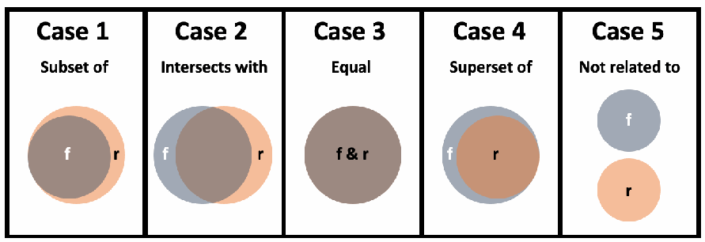

NIST IR 8278A Rev. 1 日本語訳
英語タイトル : National Online Informative References (OLIR) Program: Submission Guidance for OLIR Developers日本語タイトル : National Online Informative References（OLIR）プログラム：OLIR 開発者向けの提出ガイダンス
公開日 : 2024-02-26
原文URL : https://csrc.nist.gov/pubs/ir/8278/a/r1/final
翻訳編集 : 自動生成（有志による非公式の日本語訳）, 原文取得日 : 2026-10-31, 訳文 : 477 / 479 ブロック
[要約] NIST IR 8278A Rev. 1 は、National Online Informative References（OLIR）プログラムに参加するためのプロセスと要件を、OLIR 開発者が理解できるよう支援する報告書です。OLIR プログラムは、分野の専門家によるオンライン参考情報の標準化された定義を促進する NIST の取り組みであり、OLIR とは、サイバーセキュリティ、プライバシー、その他の情報通信技術の分野の文書の要素間の関係です。本書の主な焦点は、OLIR を NIST に提出して OLIR カタログに掲載してもらう際に、OLIR テンプレートをどのように記入するかを開発者に説明することです。
NIST Internal Report NIST IR 8278Ar1
NIST 内部報告書 NIST IR 8278Ar1
National Online Informative References (OLIR) Program
National Online Informative References（OLIR）プログラム
Submission Guidance for OLIR Developers
OLIR 開発者向けの提出ガイダンス
Matthew Barrett Nicole Keller Stephen Quinn Matthew C. Smith Karen Scarfone Vincent Johnson
Matthew Barrett Nicole Keller Stephen Quinn Matthew C. Smith Karen Scarfone Vincent Johnson
This publication is available free of charge from: https://doi.org/10.6028/NIST.IR.8278Ar1
本刊行物は次の場所から無料で入手できます: https://doi.org/10.6028/NIST.IR.8278Ar1
NIST Internal Report NIST IR 8278Ar1
NIST 内部報告書 NIST IR 8278Ar1
National Online Informative References (OLIR) Program
National Online Informative References（OLIR）プログラム
Submission Guidance for OLIR Developers
OLIR 開発者向けの提出ガイダンス
Matthew Barrett*
Matthew Barrett*
Applied Cybersecurity Division
Applied Cybersecurity Division
Information Technology Laboratory
Information Technology Laboratory
Nicole Keller Stephen Quinn
Nicole Keller Stephen Quinn
Computer Security Division Information Technology Laboratory
Computer Security Division Information Technology Laboratory
Matthew C. Smith
Matthew C. Smith
Huntington Ingalls Industries
Huntington Ingalls Industries
Karen Scarfone Scarfone Cybersecurity
Karen Scarfone Scarfone Cybersecurity
Vincent Johnson
Vincent Johnson
Electrosoft Services, Inc.
Electrosoft Services, Inc.
*Former employee; all work for this publication was done while at NIST
*元職員。本刊行物に関するすべての作業は NIST 在職中に行われた
This publication is available free of charge from: https://doi.org/10.6028/NIST.IR.8278Ar1
本刊行物は次の場所から無料で入手できます: https://doi.org/10.6028/NIST.IR.8278Ar1
February 2024
2024年2月
［米国商務省の紋章。公的な標章のため、この非公式サイトには掲載していません。原本 PDF を参照してください。］
U.S. Department of Commerce Gina M. Raimondo, Secretary
米国商務省 Gina M. Raimondo 長官
National Institute of Standards and Technology
National Institute of Standards and Technology
Laurie E. Locascio, NIST Director and Under Secretary of Commerce for Standards and Technology
Laurie E. Locascio、NIST 所長兼商務次官（標準・技術担当）
Certain equipment, instruments, software, or materials, commercial or non-commercial, are identified in this paper in order to specify the experimental procedure adequately. Such identification does not imply recommendation or endorsement of any product or service by NIST, nor does it imply that the materials or equipment identified are necessarily the best available for the purpose.
本論文では、実験手順を適切に特定するために、特定の機器、器具、ソフトウェア、または材料（商用・非商用を問わない）を挙げています。こうした特定は、NIST がいかなる製品やサービスも推奨または支持していることを意味せず、挙げた材料や機器がその目的に最適であることを意味するものでもありません。
There may be references in this publication to other publications currently under development by NIST in accordance with its assigned statutory responsibilities. The information in this publication, including concepts and methodologies, may be used by federal agencies even before the completion of such companion publications. Thus, until each publication is completed, current requirements, guidelines, and procedures, where they exist, remain operative. For planning and transition purposes, federal agencies may wish to closely follow the development of these new publications by NIST.
本刊行物では、NIST が法令上の責務に従って作成中の他の刊行物に言及している場合があります。概念や方法論を含む本刊行物の情報は、そうした関連刊行物が完成する前でも、連邦機関が使用してかまいません。したがって、各刊行物が完成するまでは、既存の現行の要件、ガイドライン、手順が引き続き有効です。計画および移行のため、連邦機関は、NIST によるこれらの新しい刊行物の策定状況を注意深く追うことを検討してもよいです。
Organizations are encouraged to review all draft publications during public comment periods and provide feedback to NIST. Many NIST cybersecurity publications, other than the ones noted above, are available at https://csrc.nist.gov/publications.
各組織には、すべての草案をパブリックコメント期間中に確認し、NIST にフィードバックを提供することが推奨されます。上記以外にも、NIST のサイバーセキュリティ関連の多くの刊行物が https://csrc.nist.gov/publications で入手できます。
NIST Technical Series Policies Copyright, Use, and Licensing Statements NIST Technical Series Publication Identifier Syntax
NIST 技術シリーズの方針 著作権、使用、およびライセンスに関する声明 NIST 技術シリーズ刊行物の識別子の構文
Publication History Approved by the NIST Editorial Review Board on 2024-02-23 Supersedes NIST IR 8278A (November 2020) https://doi.org/10.6028/NIST.IR.8278A
刊行履歴 2024-02-23 に NIST 編集審査委員会（Editorial Review Board）が承認 NIST IR 8278A（2020 年 11 月）を置き換え https://doi.org/10.6028/NIST.IR.8278A
How to Cite this NIST Technical Series Publication Barrett M, Keller N, Quinn S, Smith MC, Scarfone K, Johnson V (2024) National Online Informative References (OLIR) Program: Submission Guidance for OLIR Developers. (National Institute of Standards and Technology, Gaithersburg, MD), NIST Internal Report (IR) NIST IR 8278Ar1. https://doi.org/10.6028/NIST.IR.8278Ar1
本 NIST 技術シリーズ刊行物の引用方法 Barrett M, Keller N, Quinn S, Smith MC, Scarfone K, Johnson V (2024) National Online Informative References (OLIR) Program: Submission Guidance for OLIR Developers. (National Institute of Standards and Technology, Gaithersburg, MD), NIST Internal Report (IR) NIST IR 8278Ar1. https://doi.org/10.6028/NIST.IR.8278Ar1
Author ORCID iDs Matthew Barrett: 0000-0002-7689-427X Nicole Keller: 0000-0003-4761-6817 Stephen Quinn: 0000-0003-1436-684X Matthew C. Smith: 0000-0003-1004-7171 Karen Scarfone: 0000-0001-6334-9486 Vincent Johnson: 0000-0002-7363-996X
著者の ORCID iD Matthew Barrett: 0000-0002-7689-427X Nicole Keller: 0000-0003-4761-6817 Stephen Quinn: 0000-0003-1436-684X Matthew C. Smith: 0000-0003-1004-7171 Karen Scarfone: 0000-0001-6334-9486 Vincent Johnson: 0000-0002-7363-996X
Contact Information olir@nist.gov
連絡先 olir@nist.gov
National Institute of Standards and Technology Attn: Applied Cybersecurity Division, Information Technology Laboratory 100 Bureau Drive (Mail Stop 2000) Gaithersburg, MD 20899-2000
National Institute of Standards and Technology Attn: Applied Cybersecurity Division, Information Technology Laboratory 100 Bureau Drive (Mail Stop 2000) Gaithersburg, MD 20899-2000
Additional Information Additional information about this publication is available at https://csrc.nist.gov/pubs/ir/8278/a/r1/final, including related content, potential updates, and document history.
追加情報 本刊行物に関する追加情報は https://csrc.nist.gov/pubs/ir/8278/a/r1/final で入手できます。関連コンテンツ、更新の可能性、文書の履歴も掲載されています。
All comments are subject to release under the Freedom of Information Act (FOIA).
すべてのコメントは、情報自由法（FOIA）に基づいて公開される場合があります。
Abstract
要旨
The National Online Informative References (OLIR) Program is a NIST effort to facilitate standardized definitions of Online Informative References (OLIRs) by subject matter experts. OLIRs are relationships between elements of documents from cybersecurity, privacy, and other information and communications technology domains. This document assists OLIR Developers in understanding the processes and requirements for participating in the Program. The primary focus of the document is to instruct Developers on how to complete an OLIR Template when submitting an OLIR to NIST for inclusion in the OLIR Catalog.
National Online Informative References（OLIR）プログラムは、分野の専門家によるオンライン参考情報（Online Informative References、OLIR）の標準化された定義を促進する、NIST の取り組みです。OLIR とは、サイバーセキュリティ、プライバシー、その他の情報通信技術の分野の文書の要素間の関係です。本書は、OLIR 開発者が、プログラムに参加するためのプロセスと要件を理解できるよう支援します。本書の主な焦点は、OLIR を NIST に提出して OLIR カタログに掲載してもらう際に、OLIR テンプレートをどのように記入するかを開発者に説明することです。
Keywords
キーワード
concept crosswalk; Informative Reference; National OLIR Program; Online Informative Reference (OLIR); set theory relationship mapping; supportive relationship mapping.
概念クロスウォーク; 参考情報; National OLIR プログラム; オンライン参考情報（OLIR）; 集合論的関係マッピング; 支援関係マッピング。
Reports on Computer Systems Technology
コンピュータシステム技術に関する報告書
The Information Technology Laboratory (ITL) at the National Institute of Standards and Technology (NIST) promotes the U.S. economy and public welfare by providing technical leadership for the Nation’s measurement and standards infrastructure. ITL develops tests, test methods, reference data, proof of concept implementations, and technical analyses to advance the development and productive use of information technology. ITL’s responsibilities include the development of management, administrative, technical, and physical standards and guidelines for the cost-effective security and privacy of other than national security-related information in federal information systems.
米国国立標準技術研究所（NIST）の情報技術研究所（ITL）は、国の計測・標準インフラストラクチャに技術的なリーダーシップを提供することで、米国経済と公共の福祉を促進しています。ITL は、情報技術の開発と生産的な利用を進めるため、テスト、テスト方法、参照データ、概念実証の実装、技術分析を開発します。ITL の責務には、連邦情報システムにおける、国家安全保障に関係しない情報のセキュリティとプライバシーを費用対効果の高い形で確保するための、管理上、運用上、技術上、物理上の標準とガイドラインの開発が含まれます。
Audience
対象読者
The primary audience for this publication is individuals interested in developing OLIRs for the National OLIR Program.
本刊行物の主な対象読者は、National OLIR プログラムのために OLIR を開発することに関心のある個人です。
Acknowledgments
謝辞
The authors would like to thank all of those who commented on and contributed to this document, particularly Murugiah Souppaya from NIST.
著者は、本書にコメントし、貢献してくださったすべての方々、特に NIST の Murugiah Souppaya 氏に感謝します。
Trademark Information
商標に関する情報
All registered trademarks and trademarks belong to their respective organizations.
すべての登録商標および商標は、それぞれの組織に帰属します。
Note to Readers
読者への注記
This specification is not meant to be read in sequential order. It is a reference for developers of OLIRs to provide clarity and direction when creating an OLIR. Developers are encouraged to review other OLIRs listed in the OLIR Catalog to better understand what is required to develop and submit an OLIR to NIST. Developers are also encouraged to contact NIST at olir@nist.gov with any questions about the development and submission process.
本仕様は、順番に読むことを想定していません。OLIR を作成する際に明確さと方向性を示す、OLIR 開発者向けの参考資料です。開発者は、OLIR を開発して NIST に提出するために何が必要かをよりよく理解できるよう、OLIR カタログに掲載されている他の OLIR を確認することが推奨されます。また、開発と提出のプロセスに関する質問がある場合は、olir@nist.gov で NIST に問い合わせることが推奨されます。
This specification includes changes from the original version of NIST IR 8278A and the first public draft of NIST IR 8278Ar1. The National OLIR Program will not require developers to resubmit existing OLIRs because of specification changes.
本仕様には、NIST IR 8278A の原版と NIST IR 8278Ar1 の最初の公開草案からの変更が含まれます。National OLIR プログラムは、仕様の変更を理由に、開発者に既存の OLIR の再提出を求めることはありません。
Patent Disclosure Notice
特許開示に関する通知
NOTICE: ITL has requested that holders of patent claims whose use may be required for compliance with the guidance or requirements of this publication disclose such patent claims to ITL. However, holders of patents are not obligated to respond to ITL calls for patents and ITL has not undertaken a patent search in order to identify which, if any, patents may apply to this publication.
通知: ITL は、本刊行物のガイダンスまたは要件への準拠に使用が必要となる可能性のある特許クレームの保有者に対し、その特許クレームを ITL に開示するよう求めています。ただし、特許の保有者には ITL による特許情報の提供要請に応じる義務はなく、ITL も、本刊行物に適用される可能性のある特許を特定するための特許調査を行っていません。
As of the date of publication and following call(s) for the identification of patent claims whose use may be required for compliance with the guidance or requirements of this publication, no such patent claims have been identified to ITL.
発行日時点で、本刊行物のガイダンスまたは要件への準拠に使用が必要となる可能性のある特許クレームの特定を求めた後も、そのような特許クレームは ITL に特定されていません。
No representation is made or implied by ITL that licenses are not required to avoid patent infringement in the use of this publication.
ITL は、本刊行物の使用にあたり特許侵害を避けるためにライセンスが不要であるとは、表明も示唆もしていません。
Table of Contents
目次
List of Tables
表の一覧
List of Figures
図の一覧
1. Introduction
1. はじめに
The National Online Informative References (OLIR) Program evolved from the need to identify related concepts between NIST documents and other documents within the information and communications technology (ICT) domain. For example, the NIST Cybersecurity Framework lists several related cybersecurity documents as Informative References [1]. Informative References show relationships between the Functions, Categories, and Subcategories of the Cybersecurity Framework and specific sections of standards, guidelines, and best practices. Informative References can be more detailed or more general than the Functions, Categories, and Subcategories and can illustrate ways to achieve those outcomes.
National Online Informative References（OLIR）プログラムは、NIST の文書と情報通信技術（ICT）分野の他の文書との間にある関連概念を特定する必要性から発展しました。たとえば、NIST サイバーセキュリティフレームワークは、関連するいくつかのサイバーセキュリティ文書を参考情報（Informative References）として挙げています [1]。参考情報は、サイバーセキュリティフレームワークの機能、カテゴリ、サブカテゴリと、標準、ガイドライン、ベストプラクティスの特定の節との関係を示します。参考情報は、機能、カテゴリ、サブカテゴリより詳細にも一般的にもなり得て、それらの成果を達成する方法を示すことができます。
Historically, NIST has published only a small subset of Informative References in its ICT frameworks (e.g., Cybersecurity Framework, Privacy Framework) in order to maintain their readability. The National OLIR Program scales to accommodate a greater number of relationships and provide a more agile support model to account for the varying update cycles of documents with relationships. The OLIR specification also provides a more robust method for clearly defining relationships.
これまで NIST は、読みやすさを保つために、ICT フレームワーク（たとえばサイバーセキュリティフレームワーク、プライバシーフレームワーク）には、参考情報のごく一部しか掲載してきませんでした。National OLIR プログラムは、より多くの関係に対応できるように拡張でき、関係を持つ文書の更新サイクルがさまざまであることを考慮した、より機敏な支援モデルを提供します。OLIR 仕様はまた、関係を明確に定義するための、より堅牢な方法も提供します。
The following are definitions of key terms from NIST Internal Report (IR) 8278, Revision 1 [2] that are also used in this document:
次に、NIST 内部報告書（IR）8278 改訂第 1 版 [2] の主要な用語の定義を示します。これらは本書でも使われています。
•A Focal Document is a NIST document that is used as the basis for comparing its elements with elements from another document. A Reference Document is a document being compared to a Focal Document.
•フォーカル文書（Focal Document）とは、その要素を別の文書の要素と比較する際の基準として使われる NIST 文書です。参照文書（Reference Document）とは、フォーカル文書と比較される文書です。
•A Focal Document Element is a discrete section, sentence, phrase, or other identifiable piece of content from a Focal Document. Similarly, a Reference Document Element is a discrete section, sentence, phrase, or other identifiable piece of content from a Reference Document.
•フォーカル文書の要素（Focal Document Element）とは、フォーカル文書の中の、個別の節、文、句、その他の識別可能なコンテンツの断片です。同様に、参照文書の要素（Reference Document Element）とは、参照文書の中の、個別の節、文、句、その他の識別可能なコンテンツの断片です。
•A concept relationship style is an explicitly defined convention for characterizing relationships for a use case. NIST IR 8477, Mapping Relationships Between Documentary Standards, Regulations, Frameworks, and Guidelines [3] defines several concept relationship styles and provides more information on using them. The three concept relationship styles supported by OLIR are as follows:
•概念関係スタイルとは、ユースケースにおける関係を特徴づけるために明示的に定義された規約です。NIST IR 8477, Mapping Relationships Between Documentary Standards, Regulations, Frameworks, and Guidelines [3] は、いくつかの概念関係スタイルを定義し、その使い方に関する詳細な情報を提供しています。OLIR がサポートする 3 つの概念関係スタイルは次のとおりです。
•A concept crosswalk indicates that a relationship exists between a Focal Document Element and a Reference Document Element without any additional characterization of that relationship.
•概念クロスウォーク（concept crosswalk）は、フォーカル文書の要素と参照文書の要素の間に関係が存在することを、その関係をそれ以上特徴づけることなく示します。
•A set theory relationship mapping indicates the relationships between a Focal Document Element and a Reference Document Element by both qualifying the rationale for indicating the connection between elements (semantic, syntactic, or functional) and classifying the relationship utilizing set theory principles (subset of, intersects with, equal, superset of, not related to).
•集合論的関係マッピング（set theory relationship mapping）は、フォーカル文書の要素と参照文書の要素の間の関係を、要素間のつながりを示す根拠（意味的、構文的、機能的）を明確にし、集合論の原理（部分集合である、交わる、等しい、上位集合である、関連しない）を用いて関係を分類することで示します。
•A supportive relationship mapping indicates how a supporting concept can or does help achieve a supported concept, with one of the concepts being a Focal Document Element and the other a Reference Document Element. One of the following relationship types must be specified for each relationship: supports, is supported by, identical, equivalent, or contrary. Relationship properties can also be specified for the “supports” and “is supported by” relationship types.
•支援関係マッピング（supportive relationship mapping）は、一方の概念がフォーカル文書の要素で、他方が参照文書の要素であるとき、支援する概念が、支援される概念の達成をどのように助けうるか、または助けているかを示します。各関係について、次の関係の種類のいずれか 1 つを指定しなければなりません。supports（支援する）、is supported by（支援される）、identical（同一）、equivalent（同等）、contrary（相反）です。「supports」と「is supported by」の関係の種類については、関係の特性も指定できます。
•An OLIR shows the relationship between two concepts without any additional characterization of that relationship (concept crosswalk OLIR), as derived from the branch of mathematics known as set theory (set theory relationship mapping OLIR), or how one concept can or does help achieve another concept (supportive relationship mapping OLIR) that complies with the standard defined in this publication and the related templates.
•OLIR とは、本刊行物と関連するテンプレートで定義された標準に準拠して、2 つの概念の間の関係を、その関係をそれ以上特徴づけることなく示す（概念クロスウォーク OLIR）、集合論として知られる数学の一分野から導かれる形で示す（集合論的関係マッピング OLIR）、または一方の概念が他方の概念の達成をどのように助けうるか、または助けているかを示す（支援関係マッピング OLIR）ものです。
•An OLIR Developer (Developer) is an individual, group, or organization that creates an OLIR and submits it to the National OLIR Program. An OLIR Developer is often the owner of the Reference Document but may also be a subject matter expert on the Reference Document who is not the owner.
•OLIR 開発者（開発者）とは、OLIR を作成して National OLIR プログラムに提出する個人、グループ、または組織です。OLIR 開発者は、参照文書の所有者であることが多いですが、所有者ではなく、参照文書に関する分野の専門家である場合もあります。
OLIRs provide a consistent and authoritative way of specifying relationships that can be used by both humans and automated tools. Each OLIR is displayed in a centralized location: the OLIR Catalog. The OLIR Catalog is publicly accessible, so anyone can use it to access, view, and download OLIRs for various pairs of documents. OLIR Developers can use the OLIR Program as a mechanism for communicating with the owners and users of other documents. Given the National OLIR Program’s nature, OLIR Developers also have the flexibility to update their documents and then update their OLIRs according to their own unique requirements and schedules.
OLIR は、人間と自動化ツールの両方が使える、関係を指定するための一貫した権威ある方法を提供します。各 OLIR は、OLIR カタログという一元的な場所に表示されます。OLIR カタログは一般に公開されており、誰でも利用して、さまざまな文書の組み合わせに対する OLIR にアクセス、表示、ダウンロードできます。OLIR 開発者は、OLIR プログラムを、他の文書の所有者や利用者と意思疎通するためのメカニズムとして使えます。National OLIR プログラムの性質上、OLIR 開発者は、自らの文書を更新し、その後、自らの固有の要件とスケジュールに従って OLIR を更新する柔軟性も持っています。
1.1. Purpose and Scope
1.1. 目的と範囲
The purpose of this document is to assist OLIR Developers in understanding the processes and requirements for participating in the National OLIR Program.
本書の目的は、OLIR 開発者が、National OLIR プログラムに参加するためのプロセスと要件を理解できるよう支援することです。
Before reading this document, OLIR Developers should first read NIST IR 8278, Revision 1, National Online Informative References (OLIR) Program: Overview, Benefits, and Use [2]. It describes the OLIR Program and explains the features, benefits, and use of the OLIR Catalog.
本書を読む前に、OLIR 開発者はまず NIST IR 8278, Revision 1, National Online Informative References (OLIR) Program: Overview, Benefits, and Use [2] を読むべきです。これは OLIR プログラムを説明し、OLIR カタログの機能、利点、使い方を解説しています。
1.2. Document Structure
1.2. 文書の構成
The remainder of this document is organized into the following sections:
本書の残りは、次の節で構成されます。
•Section 2 describes the general processes for developing OLIRs, submitting them to NIST for inclusion in the OLIR Catalog (including pre-submission and post-submission steps), updating them, and archiving them.
•第 2 節では、OLIR を開発し、OLIR カタログに掲載してもらうために NIST に提出し（提出前と提出後のステップを含みます）、更新し、アーカイブするための一般的なプロセスを説明します。
•Section 3 provides guidance for completing an OLIR Template when submitting an OLIR.
•第 3 節では、OLIR を提出する際の OLIR テンプレートの記入に関するガイダンスを示します。
•The References section lists the references cited in this publication.
•参考文献の節には、本刊行物で引用した参考文献を挙げます。
•Appendix A defines the Participation Agreement for the OLIR Program for Developers.
•付録 A では、開発者向けの OLIR プログラム参加同意書を定義します。
•Appendix B contains a list of the acronyms used throughout this document.
•付録 B には、本書全体で使われている頭字語の一覧を示します。
•Appendix C provides a glossary of terminology used throughout this document.
•付録 C には、本書全体で使われている用語の用語集を示します。
•Appendix D offers a brief change log for this revision of the document.
•付録 D には、本書のこの改訂版の簡単な変更履歴を示します。
2. OLIR Life Cycle
2. OLIR のライフサイクル
This section describes the general process for developing OLIRs and submitting them to NIST for inclusion in the National OLIR Program’s Catalog. It includes an overview of the process that NIST will follow to screen the OLIR submissions and publish them in the OLIR Catalog. This section also describes the process that NIST and Developers will follow to update and archive OLIRs. Potential OLIR Developers — who may be individuals, teams, or organizations — should review the Participation Agreement in Appendix A. The agreement contains the administrative requirements for participating in the National OLIR Program.
本節では、OLIR を開発し、National OLIR プログラムのカタログへの掲載のために NIST に提出する一般的なプロセスを説明します。NIST が OLIR の提出物をスクリーニングし、OLIR カタログで公開するために従うプロセスの概要も含みます。本節ではまた、NIST と開発者が OLIR を更新し、アーカイブするために従うプロセスも説明します。OLIR 開発者になる可能性のある方（個人、チーム、組織のいずれでもかまいません）は、付録 A の参加同意書を確認すべきです。この同意書には、National OLIR プログラムに参加するための事務上の要件が含まれています。
The following steps comprise the OLIR life cycle:
OLIR のライフサイクルは、次のステップで構成されます。
Pre-Submission:
提出前:
1.Request OLIR Submission Account: The Developer emails olir@nist.gov requesting an account for the submission of an OLIR.
1.OLIR 提出アカウントの申請: 開発者は、olir@nist.gov に電子メールを送り、OLIR の提出用のアカウントを申請します。
2.Initial OLIR Development: The Developer becomes familiar with the procedures and requirements of the National OLIR Program, downloads the desired Focal Document Template from the Program’s website, and performs the initial development of the OLIR.
2.OLIR の初期開発: 開発者は、National OLIR プログラムの手順と要件に習熟し、プログラムのウェブサイトから目的のフォーカル文書テンプレートをダウンロードし、OLIR の初期開発を行います。
Submission:
提出:
3.Creating the Submission: The Developer logs into the OLIR submission account and performs the steps for creating the OLIR submission and processing the OLIR against the specifications in Section 3 of this document.
3.提出物の作成: 開発者は、OLIR 提出アカウントにログインし、OLIR の提出物を作成して、本書の第 3 節の仕様に照らして OLIR を処理するステップを実行します。
4.OLIR Posting and Submission for NIST Screening: After the OLIR has been accepted within the submission tool and prior to submitting the OLIR for screening, the Developer posts the OLIR to a public website of their choosing. This posting enables the Developer to finalize the submission for NIST screening.
4.OLIR の掲載と NIST のスクリーニングへの提出: 開発者は、提出ツール内で OLIR が受理された後、スクリーニングのために OLIR を提出する前に、自ら選んだ公開ウェブサイトに OLIR を掲載します。この掲載により、開発者は NIST のスクリーニングに向けて提出物を確定できます。
Post-Submission:
提出後:
5.NIST Screening: NIST reviews the submission, determines whether the OLIR and other submitted materials are ready for public review, and addresses any issues with the Developer prior to public review.
5.NIST によるスクリーニング: NIST は提出物を確認し、OLIR とその他の提出資料が公開レビューの準備ができているかどうかを判断し、公開レビューの前に開発者と協議して問題に対処します。
6.Public Review and Feedback: NIST holds a 30-day public review of the draft candidate OLIR. The Developer then addresses comments as necessary, and additional candidates are released for public comment if desired or needed.
6.公開レビューとフィードバック: NIST は、候補 OLIR の草案について 30 日間の公開レビューを行います。その後、開発者は必要に応じてコメントに対処し、希望または必要があれば、追加の候補 OLIR を公開コメントに付します。
7.Final Listing in the OLIR Catalog: NIST updates the OLIR listing status in the OLIR Catalog to “final” and announces the OLIR’s availability.
7.OLIR カタログへの最終掲載: NIST は、OLIR カタログ内の OLIR の掲載ステータスを「final」に更新し、OLIR が利用可能になったことを発表します。
8.OLIR Maintenance and Archival: Anyone can provide feedback on the OLIR throughout its life cycle. The Developer periodically updates the OLIR, as necessary. The OLIR is archived when it is no longer maintained or needed (e.g., if the Reference Document is withdrawn or deprecated).
8.OLIR の保守とアーカイブ: 誰でも、OLIR のライフサイクル全体を通じて OLIR に対するフィードバックを提供できます。開発者は、必要に応じて OLIR を定期的に更新します。OLIR は、保守されなくなった場合や不要になった場合（たとえば参照文書が廃止または非推奨になった場合）にアーカイブされます。
Each step should be carried out to ensure that the OLIR is accurate, well-formed, and documented throughout its development and subsequent publication, update, or archival. The following sections describe considerations for each step.
OLIR が、開発から、その後の公開、更新、アーカイブに至るまで、正確で、整形式であり、文書化されていることを確保するため、各ステップを実施すべきです。以下の節では、各ステップの考慮事項を説明します。
2.1. Pre-Submission Steps for OLIR Developers
2.1. OLIR 開発者の提出前のステップ
The first two steps in the OLIR life cycle involve the developer requesting an OLIR submission account and creating an OLIR. The quality of OLIR documentation can significantly impact an OLIR’s effectiveness. Sections 2.1.1 and 2.1.2 describe each of the steps in greater detail.
OLIR のライフサイクルの最初の 2 つのステップは、開発者による OLIR 提出アカウントの申請と、OLIR の作成です。OLIR の文書化の質は、OLIR の有効性に大きな影響を及ぼす可能性があります。第 2.1.1 節と第 2.1.2 節で、各ステップをより詳しく説明します。
2.1.1. Step 1: Request OLIR Submission Account
2.1.1. ステップ 1: OLIR 提出アカウントの申請
The Developer emails olir@nist.gov requesting an account for the submission of an OLIR. At this point, a Developer would presumably agree to the requirements for participation in the National OLIR Program before continuing to develop the OLIR. Appendix A of this publication provides the latest version of the Participation Agreement that the Developer must sign.
開発者は、olir@nist.gov に電子メールを送り、OLIR の提出用のアカウントを申請します。この時点で開発者は、OLIR の開発を続ける前に、National OLIR プログラムへの参加の要件に同意するものと想定されます。本刊行物の付録 A に、開発者が署名しなければならない参加同意書の最新版を示します。
The email request should contain:
電子メールの申請には、次を含めるべきです。
•A signed Participation Agreement (see Appendix A)
•署名済みの参加同意書（付録 A を参照）
•First and last name of account user
•アカウントのユーザーの姓名
•Name of submitting organization and website link
•提出する組織の名称とウェブサイトのリンク
•Contact information (phone number, email address)
•連絡先情報（電話番号、電子メールアドレス）
Upon the successful creation of the account, the Developer will receive an email with account information, login requirements, and a submission quick start guide.
アカウントの作成が成功すると、開発者は、アカウント情報、ログインの要件、提出のクイックスタートガイドを記載した電子メールを受け取ります。
2.1.2. Step 2: Initial OLIR Development
2.1.2. ステップ 2: OLIR の初期開発
During initial OLIR development, a Developer becomes familiar with the requirements of the National OLIR Program and all procedures involved during the OLIR life cycle.
OLIR の初期開発の間に、開発者は National OLIR プログラムの要件と、OLIR のライフサイクルに関わるすべての手順に習熟します。
The Developer next decides which Focal Document will be the target for their OLIR. To promote consistency and facilitate the review of OLIRs by NIST and the public, NIST has created a spreadsheet (.xlsx) template — an OLIR Template — for each Focal Document and may also release OLIR Templates for Focal Documents in other formats, like comma-separated values (CSV) (.csv) and JavaScript Object Notation (JSON) (.json). The developer chooses an OLIR Template and downloads the appropriate template for creating a concept crosswalk, set theory relationship mapping, or supportive relationship mapping.
次に開発者は、どのフォーカル文書を OLIR の対象とするかを決めます。一貫性を促進し、NIST と一般の人々による OLIR のレビューを容易にするため、NIST は各フォーカル文書について、スプレッドシート（.xlsx）のテンプレートである OLIR テンプレートを作成しており、コンマ区切り値（CSV）（.csv）や JavaScript Object Notation（JSON）（.json）など、他の形式の OLIR テンプレートも公開する場合があります。開発者は OLIR テンプレートを選び、概念クロスウォーク、集合論的関係マッピング、または支援関係マッピングを作成するための適切なテンプレートをダウンロードします。
The Developer fills out the downloaded OLIR Template, following the instructions and guidance in Section 3 of this publication.1
開発者は、本刊行物の第 3 節の手順とガイダンスに従って、ダウンロードした OLIR テンプレートに記入します。1
2.2. Submission Steps for OLIR Developers
2.2. OLIR 開発者の提出のステップ
The processes for submitting and posting an OLIR — which correspond to steps 3 and 4 in the OLIR life cycle — are described in the following sections.
OLIR を提出して掲載するプロセス（OLIR のライフサイクルのステップ 3 と 4 に相当します）を、以下の節で説明します。
2.2.1. Step 3: Creating the Submission
2.2.1. ステップ 3: 提出物の作成
At this point, the Developer has completed the OLIR. The Developer logs into the OLIR submission account and performs the steps for creating the OLIR submission and processing an OLIR against the specifications in Section 3 of this document. That section also provides guidance for filling out the General Information necessary for the successful submission of the OLIR within the submission tool.
この時点で、開発者は OLIR を完成させています。開発者は OLIR 提出アカウントにログインし、OLIR の提出物を作成して、本書の第 3 節の仕様に照らして OLIR を処理するステップを実行します。同節は、提出ツール内で OLIR を正常に提出するために必要な一般情報の記入に関するガイダンスも示します。
For any questions during the submission process, contact olir@nist.gov.
提出プロセス中に質問がある場合は、olir@nist.gov に連絡してください。
2.2.2. Step 4: OLIR Posting and Submission for NIST Screening
2.2.2. ステップ 4: OLIR の掲載と NIST のスクリーニングへの提出
After acceptance of the OLIR within the submission tool and prior to submission, the Developer posts the OLIR to a public website of their choosing. This posting enables the Developer to finalize the submission for NIST screening. The posting of the OLIR also enables NIST to link to the OLIR during both the comment period and the listing phase.
提出ツール内で OLIR が受理された後、提出する前に、開発者は自ら選んだ公開ウェブサイトに OLIR を掲載します。この掲載により、開発者は NIST のスクリーニングに向けて提出物を確定できます。OLIR を掲載することで、NIST はコメント期間と掲載段階の両方で OLIR にリンクすることもできます。
2.3. Post-Submission Steps for NIST and OLIR Developers
2.3. NIST と OLIR 開発者の提出後のステップ
The processes for screening, publishing, and maintaining an OLIR — which correspond to steps 5 through 8 in the OLIR life cycle — are described in the following sections.
OLIR をスクリーニングし、公開し、保守するプロセス（OLIR のライフサイクルのステップ 5 から 8 に相当します）を、以下の節で説明します。
2.3.1. Step 5: NIST Screening of the Submission
2.3.1. ステップ 5: 提出物の NIST によるスクリーニング
NIST reviews the submission and determines whether the OLIR and other submitted materials are ready for public review. NIST screens the submission for completeness and accuracy and ensures that the content is well-formed. NIST may contact the Developer with questions about the submitted materials during the screening period.
NIST は提出物を確認し、OLIR とその他の提出資料が公開レビューの準備ができているかどうかを判断します。NIST は、提出物の完全性と正確性をスクリーニングし、内容が整形式であることを確認します。NIST は、スクリーニング期間中、提出資料に関する質問のために開発者に連絡する場合があります。
2.3.2. Step 6: Public Review and Feedback for the Candidate OLIR
2.3.2. ステップ 6: 候補 OLIR の公開レビューとフィードバック
Once the submission has been submitted and successfully screened, NIST will then post an entry for the OLIR in the OLIR Catalog2 as a candidate for a 30-day public review period. NIST will invite the public to review and comment on the candidate OLIR and provide feedback to the Developer.
提出物が提出され、スクリーニングに合格すると、NIST は OLIR カタログ2 に OLIR のエントリーを掲載し、30 日間の公開レビュー期間に向けた候補として提示します。NIST は一般の人々に候補 OLIR のレビューとコメントを呼びかけ、開発者にフィードバックを提供します。
Each candidate being posted for a public review period is assigned one of the following status designators:
公開レビュー期間のために掲載される各候補には、次のいずれかのステータス表示が割り当てられます。
•Work-in-progress draft: It is currently in an early stage of development and is incomplete. It has not been extensively edited or vetted. Work-in-progress drafts are solely informational in nature and are not intended to be implemented.
•Work-in-progress draft（作業中の草案）: 現在、開発の初期段階にあり、未完成です。広範な編集や審査は行われていません。作業中の草案は情報提供のみを目的としており、実装を意図したものではありません。
•Preliminary draft: It is considered stable, but changes are expected to occur. There are gaps in the content, and the document is still incomplete. Early adopters may consider experimenting with the content with the understanding that they will identify gaps and challenges.
•Preliminary draft（予備草案）: 安定していると見なされますが、変更が生じる見込みです。内容に欠落があり、文書はまだ未完成です。早期採用者は、欠落や課題を自ら特定することを理解したうえで、内容を試してみてもよいでしょう。
•Draft: It is a complete draft proposed as a candidate for Final status. Changes may occur based on public comments, but such changes are expected to be relatively minor. Early adopters may attempt to use the content.
•Draft（草案）: Final ステータスの候補として提案される完全な草案です。公開コメントに基づいて変更が生じる場合がありますが、そのような変更は比較的軽微と見込まれます。早期採用者は、内容を使ってみてもよいでしょう。
An OLIR reviewer can email olir@nist.gov to provide comments on the reviewer’s implementation environment, procedures, and other relevant information. Depending on the review, the Developer may need to respond to comments. NIST may also consult independent expert reviewers, as appropriate. For example, NIST may decide that it does not have the expertise to determine whether the comments have been addressed satisfactorily. Additionally, NIST may disagree with the proposed issue resolutions and seek additional perspectives from third-party reviewers.
OLIR のレビュー担当者は、olir@nist.gov に電子メールを送り、レビュー担当者の実装環境、手順、その他の関連情報についてコメントを提供できます。レビューの内容によっては、開発者がコメントに応答する必要がある場合があります。NIST は、必要に応じて、独立した専門家のレビュー担当者に相談する場合もあります。たとえば、コメントに十分に対処されたかどうかを判断する専門知識が NIST にないと判断する場合があります。さらに、NIST が提案された問題の解決策に同意せず、第三者のレビュー担当者からの追加の見解を求める場合もあります。
At the end of the public review period, NIST will give the Developer 30 days to respond to comments and address any outstanding issues.
公開レビュー期間の終了時に、NIST は開発者に、コメントに応答し、未解決の問題に対処するための 30 日間を与えます。
•If the candidate was a work-in-progress draft or preliminary draft, an updated version will need to be submitted to NIST for another public comment period, typically as a preliminary draft or regular draft.
•候補が作業中の草案または予備草案だった場合は、通常、予備草案または通常の草案として、再度の公開コメント期間に付すための更新版を NIST に提出する必要があります。
•If the candidate was a regular draft, NIST will work with the developer to determine whether the candidate is ready to be finalized or if it needs to be updated and released for another public comment period.
•候補が通常の草案だった場合、NIST は開発者と協力して、候補を確定する準備ができているか、更新して再度公開コメント期間のために公開する必要があるかを判断します。
2.3.3. Step 7: Final Listing in the OLIR Catalog
2.3.3. ステップ 7: OLIR カタログへの最終掲載
Once the OLIR is ready to be finalized, NIST will change the OLIR’s status to “final” in the OLIR Catalog and announce its availability. The listing will provide data about the OLIR, downloadable formats, and links to OLIR materials.
OLIR を確定する準備ができたら、NIST は OLIR カタログ内の OLIR のステータスを「final」に変更し、利用可能になったことを発表します。掲載には、OLIR に関するデータ、ダウンロード可能な形式、OLIR 資料へのリンクが含まれます。
2.3.4. Step 8: OLIR Maintenance and Archival
2.3.4. ステップ 8: OLIR の保守とアーカイブ
Throughout an OLIR’s life cycle, any reviewer can submit comments or questions to olir@nist.gov. NIST will forward feedback to the Developer. Users who subscribe to the mailing list can receive announcements about updates or other issues related to an OLIR. The selected OLIR’s description in the OLIR Catalog will contain instructions for subscribing to the mailing address list.
OLIR のライフサイクル全体を通じて、どのレビュー担当者も olir@nist.gov にコメントや質問を提出できます。NIST はフィードバックを開発者に転送します。メーリングリストを購読しているユーザーは、OLIR の更新やその他の問題に関するお知らせを受け取れます。OLIR カタログ内の選択した OLIR の説明には、メーリングリストを購読する方法が記載されます。
NIST will periodically review the OLIR Catalog to determine whether individual OLIRs are still relevant or if changes need to be made. If the Developer decides to update the OLIR at any time, NIST will announce that the OLIR is in the process of being updated via a notification in the OLIR Catalog. If the revised OLIR contains major changes (see Section 3.1.9 for version definitions), it will be considered a new submission and will be required to undergo the same review process as a new submission. If the OLIR contains minor changes, it will undergo a 30-day public comment period. If the OLIR contains administrative changes, no comment period is required, and the updated OLIR will be listed in the OLIR Catalog with an appropriate version number to annotate the update.
NIST は、個々の OLIR がなお関連性を持っているか、変更が必要かどうかを判断するために、OLIR カタログを定期的に確認します。開発者がいつでも OLIR を更新すると決めた場合、NIST は、OLIR カタログの通知を通じて、OLIR の更新作業中であることを発表します。改訂された OLIR に大きな変更が含まれる場合（バージョンの定義は第 3.1.9 節を参照）、新規の提出物と見なされ、新規の提出物と同じレビュープロセスを経る必要があります。OLIR に軽微な変更が含まれる場合は、30 日間の公開コメント期間を経ます。OLIR に管理上の変更が含まれる場合は、コメント期間は不要であり、更新された OLIR は、更新を示す適切なバージョン番号とともに OLIR カタログに掲載されます。
At the discretion of NIST or the Developer, the OLIR can either be archived or removed from the OLIR Catalog altogether. Typical reasons for such actions might be that the Reference Document is no longer supported or is obsolete, or the Developer no longer wishes to provide support for the OLIR. Unless otherwise requested by the Developer, withdrawn OLIRs will be deleted from the OLIR Catalog, and an entry will remain to indicate that an OLIR was previously available.
NIST または開発者の裁量により、OLIR をアーカイブすることも、OLIR カタログから完全に削除することもできます。そのような措置の一般的な理由には、参照文書がサポートされなくなったか、陳腐化した場合や、開発者が OLIR のサポートを提供したくなくなった場合などがあります。開発者から別段の要請がない限り、撤回された OLIR は OLIR カタログから削除され、かつて OLIR が利用可能だったことを示すエントリーが残ります。
If a Developer first submitted a concept crosswalk OLIR and later submits a set theory or supportive relationship mapping OLIR for the same Focal Document/Reference Document pair, the developer should decide whether they want to support both OLIRs in the Catalog or if they want the concept crosswalk OLIR to be archived and only the mapping OLIR to be in the Catalog.
開発者が最初に概念クロスウォーク OLIR を提出し、後に同じフォーカル文書／参照文書の組み合わせについて集合論的関係マッピング OLIR または支援関係マッピング OLIR を提出した場合、開発者は、両方の OLIR をカタログでサポートしたいのか、概念クロスウォーク OLIR をアーカイブして、マッピング OLIR のみをカタログに載せたいのかを決めるべきです。
3. General Information Instructions and Guidance
3. 一般情報の手順とガイダンス
This section provides instructions and guidance to Developers for completing the General Information steps of the submission tool. The Developer must follow the criteria as explained in Sections 3.1 and 3.2, respectively. Section 3.3 provides additional examples of how to document relationships.
本節では、開発者が提出ツールの一般情報のステップに記入するための手順とガイダンスを示します。開発者は、それぞれ第 3.1 節と第 3.2 節で説明する基準に従わなければなりません。第 3.3 節では、関係を文書化する方法の追加の例を示します。
3.1. Documenting the General Information
3.1. 一般情報の記入
Developers must fill out their OLIR description via the General Information fields of the submission tool. This metadata will be used by NIST to update the OLIR Catalog entry for the OLIR. Table 1 shows the fields that Developers should complete, along with an example for each field. Sections 3.1.1 through 3.1.17 contain additional information on each field, including more examples.
開発者は、提出ツールの一般情報の項目を通じて、OLIR の説明に記入しなければなりません。このメタデータは、NIST が OLIR カタログのエントリーを更新するために使います。表 1 に、開発者が記入すべき項目と、各項目の例を示します。第 3.1.1 節から第 3.1.17 節に、各項目に関する追加の情報とさらなる例を示します。
Table 1. General Information Field Descriptions
表 1. 一般情報の項目の説明
| Field Name | Description | Example |
|---|---|---|
| Reference Document | The full Reference Document name and version that is being compared to the Focal Document | Special Publication 800-171, Revision 1: Protecting Controlled Unclassified Information in Nonfederal Systems and Organizations |
| Reference Document Short Name | The short name of the Reference Document | 800-171 Rev 1 |
| Reference Document Version | The iteration of the Reference Document used for the OLIR | 1.0, 1.0.0, Revision 1 |
| Reference Document Author | The organization(s) and/or person(s) that authored the Reference Document | National Institute of Standards and Technology |
| Reference Document URL (Uniform Resource Locator) | The URL where the Reference Document can be viewed, downloaded, or purchased | https:/ |
| Reference Document Date | The date that the Reference Document was published and, if applicable, amended | 12/00/2016, updated on 06/07/2018 |
| Informative Reference Name | The name by which the OLIR listing will be known | NIST-SP800-171-to-Framework-v1 |
| Informative Reference Short Name | To improve consistency and readability of these names, OLIR Developers must use existing abbreviations whenever available for both the Reference Document and Focal Document | “HITRUST-CSF-v9.2” “IoTSF-Security-Framework-v2 |
| Informative Reference Version | The version of the OLIR itself | 1.0.0 |
| Point of Contact | At least one person’s name (optional), email address (required), and phone number (optional) within the OLIR Developer’s organization | Jane Doe +1 555-555-5555 example@nist.gov |
| Informative Reference Developer | The creator of the OLIR (e.g., person, team, organization) | National Institute of Standards and Technology |
| Comprehensive | Whether the OLIR maps all elements in the Reference Document to the Focal Document (“Yes”) or not (“No”) | Yes, No |
| Summary (optional) | The purpose of the OLIR | The purpose of this OLIR is to indicate relationships between NIST SP 800-171 and the Cybersecurity Framework. |
| Target Audience (Community) (optional) | The intended audience for the OLIR | The intended audience for this OLIR is those seeking to protect controlled unclassified information using the Cybersecurity Framework. |
| Citations (optional) | A listing of source material (beyond the Focal Document and Reference Document) that supported development of the OLIR | Mapping of Cybersecurity Framework v.1.0 to SP 800 171 Rev. 1, https:/ |
| Comments (optional) | Notes to NIST or implementers | None |
| Web Address | The URL where the OLIR can be found | https:/ |
| 項目名 | 説明 | 例 |
|---|---|---|
| 参照文書（Reference Document） | フォーカル文書と比較される参照文書の完全な名称とバージョン | Special Publication 800-171, Revision 1: Protecting Controlled Unclassified Information in Nonfederal Systems and Organizations |
| 参照文書の短縮名（Reference Document Short Name） | 参照文書の短縮名 | 800-171 Rev 1 |
| 参照文書のバージョン（Reference Document Version） | OLIR に使われる参照文書の版 | 1.0, 1.0.0, Revision 1 |
| 参照文書の著者（Reference Document Author） | 参照文書を作成した組織、個人、またはその両方 | National Institute of Standards and Technology |
| 参照文書の URL（Reference Document URL (Uniform Resource Locator)） | 参照文書を閲覧、ダウンロード、または購入できる URL | https:/ |
| 参照文書の日付（Reference Document Date） | 参照文書が発行された日付と、該当する場合は修正された日付 | 12/00/2016, updated on 06/07/2018 |
| 参考情報の名称（Informative Reference Name） | OLIR の掲載が呼ばれる名称 | NIST-SP800-171-to-Framework-v1 |
| 参考情報の短縮名（Informative Reference Short Name） | これらの名称の一貫性と読みやすさを向上させるため、OLIR 開発者は、参照文書とフォーカル文書の両方について、既存の略語があれば必ずそれを使わなければなりません | “HITRUST-CSF-v9.2” “IoTSF-Security-Framework-v2 |
| 参考情報のバージョン（Informative Reference Version） | OLIR 自体のバージョン | 1.0.0 |
| 連絡窓口（Point of Contact） | OLIR 開発者の組織内の、少なくとも 1 人の氏名（任意）、電子メールアドレス（必須）、電話番号（任意） | Jane Doe +1 555-555-5555 example@nist.gov |
| 参考情報の開発者（Informative Reference Developer） | OLIR の作成者（たとえば個人、チーム、組織） | National Institute of Standards and Technology |
| 網羅性（Comprehensive） | OLIR が参照文書のすべての要素をフォーカル文書にマッピングしているか（「Yes」）、いないか（「No」） | Yes, No |
| 概要（Summary）（任意） | OLIR の目的 | この OLIR の目的は、NIST SP 800-171 とサイバーセキュリティフレームワークの間の関係を示すことです。 |
| 対象読者（コミュニティ）（Target Audience (Community)）（任意） | OLIR の想定される読者 | この OLIR の想定される読者は、サイバーセキュリティフレームワークを使って管理対象非機密情報を保護しようとする人々です。 |
| 引用（Citations）（任意） | OLIR の開発を支えた、（フォーカル文書と参照文書以外の）情報源の資料の一覧 | Mapping of Cybersecurity Framework v.1.0 to SP 800 171 Rev. 1, https:/ |
| コメント（Comments）（任意） | NIST または実装者へのメモ | なし |
| ウェブアドレス（Web Address） | OLIR を見つけられる URL | https:/ |
3.1.1. Reference Document
3.1.1. 参照文書（Reference Document）
The Reference Document field provides the full name of the Reference Document. The title of the publication is annotated in italics. The field also includes any unique identifiers associated with the version, revision, and/or edition.
Reference Document 項目には、参照文書の完全な名称を記入します。刊行物の題名はイタリック体で示します。この項目には、バージョン、改訂版、版に関連する固有の識別子も含めます。
Examples:
例:
“Special Publication 800-53, Revision 5, Security and Privacy Controls for Information Systems and Organizations”
“Special Publication 800-53, Revision 5, Security and Privacy Controls for Information Systems and Organizations”
“Technical Report 27103:2018, Information technology – Security techniques – Cybersecurity and ISO and IEC Standards”
“Technical Report 27103:2018, Information technology – Security techniques – Cybersecurity and ISO and IEC Standards”
3.1.2. Reference Document Short Name
3.1.2. 参照文書の短縮名（Reference Document Short Name）
The Reference Document Short Name designates the short name of the Reference Document. This field SHALL be thirty (30) characters or less.
Reference Document Short Name は、参照文書の短縮名を指定します。この項目は 30 文字以下でなければなりません（SHALL）。
3.1.3. Reference Document Version
3.1.3. 参照文書のバージョン（Reference Document Version）
The Reference Document Version denotes the iteration of the Reference Document used for the OLIR.
Reference Document Version は、OLIR に使われる参照文書の版を示します。
Examples:
例:
1.0, 1.0.0, Revision 1
1.0, 1.0.0, Revision 1
3.1.4. Reference Document Author
3.1.4. 参照文書の著者（Reference Document Author）
The Reference Document Author refers to the organizations and/or persons who authored the Reference Document. For example, NIST would be listed as the Reference Document Author for NIST SP 800-171, even if a non-NIST Developer were to create an OLIR for it [3]. Multiple authors must be separated by commas.
Reference Document Author は、参照文書を作成した組織、個人、またはその両方を指します。たとえば、NIST 以外の開発者がその OLIR を作成する場合でも、NIST SP 800-171 の参照文書の著者として NIST を記載します [3]。複数の著者は、コンマで区切らなければなりません。
Pseudonyms and group names not registered as organization names with the Internal Revenue Service or like organizations (e.g., Doing Business As names, working group names, committee names) must be listed in addition to the organizations and/or persons using the preface “prepared by the.” Multiple pseudonyms and/or group names must be separated by commas. Authors must be separated from pseudonyms and group names using a semicolon.
内国歳入庁（Internal Revenue Service）または同様の組織に組織名として登録されていない別名やグループ名（たとえば、事業名（Doing Business As）、作業部会名、委員会名）は、「prepared by the」という前置きを付けて、これらを使用する組織や個人に加えて記載しなければなりません。複数の別名やグループ名は、コンマで区切らなければなりません。著者と別名やグループ名は、セミコロンで区切らなければなりません。
Examples:
例:
“National Institute of Standards and Technology; prepared by the Joint Task Force”
“National Institute of Standards and Technology; prepared by the Joint Task Force”
“ACME, Inc.”
“ACME, Inc.”
“Jane Doe, John Smith”
“Jane Doe, John Smith”
“International Organization for Standardization, International Electrotechnical Commission; prepared by the Joint Technical Committee ISO/IEC JTC 1, Information technology, Subcommittee SC 27, IT Security techniques”
“International Organization for Standardization, International Electrotechnical Commission; prepared by the Joint Technical Committee ISO/IEC JTC 1, Information technology, Subcommittee SC 27, IT Security techniques”
3.1.5. Reference Document URL
3.1.5. 参照文書の URL（Reference Document URL）
The Reference Document URL field denotes the publicly available online location of the Reference Document. It must respond to standard Hypertext Transfer Protocol (HTTP) and HTTP Secure (HTTPS) requests.
Reference Document URL 項目は、参照文書が一般に公開されているオンライン上の場所を示します。その URL は、標準のハイパーテキスト転送プロトコル（HTTP）および HTTP Secure（HTTPS）の要求に応答しなければなりません。
3.1.6. Reference Document Date
3.1.6. 参照文書の日付（Reference Document Date）
The Reference Document Date refers to the calendar date of the Reference Document version, revision, and/or edition, including any applicable amendment dates to account for any updates. The Reference Document publication and amendment dates must appear in MM/DD/YYYY format. When publication and/or amendment dates list only the month and year, the day field must be recorded with “00.” Publication and amendment dates must be separated by a comma, and amendment dates must be prepended with “updated on.”
Reference Document Date は、参照文書のバージョン、改訂版、版のカレンダー上の日付を指し、更新を反映するために該当する修正日も含みます。参照文書の発行日と修正日は、MM/DD/YYYY の形式で記載しなければなりません。発行日や修正日が月と年のみの場合は、日の欄に「00」を記録しなければなりません。発行日と修正日はコンマで区切らなければならず、修正日の前には「updated on」を付けなければなりません。
Examples:
例:
“04/00/2013, updated on 01/22/2015”
“04/00/2013, updated on 01/22/2015”
“12/00/2016”
“12/00/2016”
3.1.7. Informative Reference Name
3.1.7. 参考情報の名称（Informative Reference Name）
The Informative Reference Name field refers to the name of the completed OLIR Template that contains the OLIR. This name will remain static over time. It includes three distinct components in the following order:
Informative Reference Name 項目は、OLIR を含む記入済み OLIR テンプレートの名称を指します。この名称は時間が経っても変わりません。次の順序で、3 つの異なる構成要素を含みます。
1.Reference Document abbreviation
1.参照文書の略語
2.Focal Document abbreviation
2.フォーカル文書の略語
3.Reference Version (see Section 3.1.9)
3.参照バージョン（第 3.1.9 節を参照）
Spaces are replaced with hyphens except that a space is used to separate the Focal Document from the Reference Version. Note that the preposition “to” separates the Reference Document from the Focal Document. Lastly, the Reference Version is contained in parentheses.
スペースはハイフンに置き換えますが、フォーカル文書と参照バージョンを区切るスペースは例外です。前置詞の「to」が参照文書とフォーカル文書を区切ることに注意してください。最後に、参照バージョンは括弧で囲みます。
Examples:
例:
“CSF-v1.1-to-Privacy-Framework-v1.0 (1.0.0)”
“CSF-v1.1-to-Privacy-Framework-v1.0 (1.0.0)”
“SP800-171-to-CSF-v1.1 (1.0.0)”
“SP800-171-to-CSF-v1.1 (1.0.0)”
“SP800-213A-v1.0-to-SP800-53r5 (1.0.0)”
“SP800-213A-v1.0-to-SP800-53r5 (1.0.0)”
3.1.8. Informative Reference Short Name
3.1.8. 参考情報の短縮名（Informative Reference Short Name）
To improve consistency and readability of these names, OLIR Developers must use existing abbreviations whenever available for both the Reference Document and Focal Document when naming their OLIR Template. NIST is currently developing a standard list of abbreviations for its own Focal Documents and Reference Documents. OLIR Developers who need to create a new abbreviation for a non-NIST document must limit it to a maximum of 30 characters. The following are examples of possible abbreviations:
これらの名称の一貫性と読みやすさを向上させるため、OLIR 開発者は、OLIR テンプレートに名前を付ける際、参照文書とフォーカル文書の両方について、既存の略語があれば必ずそれを使わなければなりません。NIST は現在、自らのフォーカル文書と参照文書のための標準的な略語の一覧を作成しています。NIST 以外の文書のために新しい略語を作る必要がある OLIR 開発者は、最大 30 文字に制限しなければなりません。次に、考えられる略語の例を示します。
•“COBIT-2019”
•“COBIT-2019”
•“HITRUST-CSF-v9.2”
•“HITRUST-CSF-v9.2”
•“IoTSF-Security-Framework-v2.1”
•“IoTSF-Security-Framework-v2.1”
3.1.9. Informative Reference Version
3.1.9. 参考情報のバージョン（Informative Reference Version）
The Reference Version indicates a major, minor, or administrative designation of the OLIR material. Generally, the version format follows a typical software release pattern:
Reference Version は、OLIR 資料のメジャー、マイナー、または管理上の指定を示します。一般に、バージョンの形式は、一般的なソフトウェアのリリースのパターンに従います。
•Major version – Changes to the OLIR may require current implementations based on the previous version to be modified.
•メジャーバージョン – 前のバージョンに基づく現在の実装の修正が必要になりうる、OLIR への変更。
•Minor version – Changes include one or more new relationships without the removal or modification of existing relationships.
•マイナーバージョン – 既存の関係を削除も修正もせずに、1 つ以上の新しい関係を含める変更。
•Administrative version – Changes are typographical or stylistic for usability.
•管理バージョン – 使いやすさのための、誤字脱字や体裁上の変更。
The field format is [major version].[minor version].[administrative version], and the initial submission uses “1.0.0”.
項目の形式は [メジャーバージョン].[マイナーバージョン].[管理バージョン] で、最初の提出では「1.0.0」を使います。
Examples: “1.0.0”; “1.1.3”; “2.0.1”
例: “1.0.0”; “1.1.3”; “2.0.1”
3.1.10. Point of Contact
3.1.10. 連絡窓口（Point of Contact）
The Point of Contact is a person associated with the Developer. The person named within this field should have subject matter expertise with the OLIR and be able to answer questions related to the OLIR. The person’s email address must be provided, and the person’s name and phone number are optional but recommended. The format for this field is:
連絡窓口（Point of Contact）は、開発者に関連する人物です。この項目に記載する人物は、OLIR に関する専門知識を持ち、OLIR に関する質問に回答できるべきです。その人物の電子メールアドレスは必ず記載しなければならず、氏名と電話番号は任意ですが、記載が推奨されます。この項目の形式は次のとおりです。
[First Name] [Last Name]\n+[country code] [area code]-[xxx]-[xxxx]\n[email address]
[First Name] [Last Name]\n+[country code] [area code]-[xxx]-[xxxx]\n[email address]
Example:
例:
Jane Doe
+1 555-555-5555
example@nist.gov
Jane Doe
+1 555-555-5555
example@nist.gov
3.1.11. Informative Reference Developer
3.1.11. 参考情報の開発者（Informative Reference Developer）
The Informative Reference Developer is the author of the OLIR and may be a person, group, or organization. Multiple people must be separated by commas. Pseudonyms and group names not registered as organization names with the Internal Revenue Service or like organizations (e.g., Doing Business As names, working group names, committee names) must be listed in addition to the organizations and/or persons using the preface “prepared by the.” Multiple pseudonyms and/or group names must be separated by commas. Individuals must be separated from pseudonyms and group names using a semicolon.
Informative Reference Developer は OLIR の作成者であり、個人、グループ、組織のいずれでもかまいません。複数の人物はコンマで区切らなければなりません。内国歳入庁（Internal Revenue Service）または同様の組織に組織名として登録されていない別名やグループ名（たとえば、事業名（Doing Business As）、作業部会名、委員会名）は、「prepared by the」という前置きを付け、組織および／または個人に加えて記載しなければなりません。複数の別名および／またはグループ名は、コンマで区切らなければなりません。個人は、別名やグループ名とセミコロンで区切らなければなりません。
Examples:
例:
“National Institute of Standards and Technology”
“National Institute of Standards and Technology”
“John Doe”
“John Doe”
3.1.12. Comprehensive
3.1.12. 網羅性（Comprehensive）
The Comprehensive value indicates the completeness of the OLIR with respect to the Reference Document. This field must be marked as follows:
Comprehensive の値は、参照文書に対する OLIR の完全さを示します。この項目は、次のように記入しなければなりません。
•“Yes” – All elements in the Reference Document are mapped to the Focal Document.
•“Yes” – 参照文書のすべての要素がフォーカル文書にマッピングされています。
•“No” – One or more elements in the Reference Document are not mapped to the Focal Document.
•“No” – 参照文書の 1 つ以上の要素がフォーカル文書にマッピングされていません。
3.1.13. Summary
3.1.13. 概要（Summary）
The Summary should be a short description of the concept crosswalk or the set theory or supportive relationship mapping. This field is optional.
Summary は、概念クロスウォーク、集合論的関係マッピング、または支援関係マッピングの短い説明にすべきです。この項目は任意です。
Example: “A set theory relationship mapping of Cybersecurity Framework version 1.1 Core to NIST Special Publication 800-53, Revision 5 controls.”
例: “Cybersecurity Framework version 1.1 Core から NIST Special Publication 800-53, Revision 5 の管理策への集合論的関係マッピング。”
3.1.14. Target Audience (Community)
3.1.14. 対象読者（コミュニティ）（Target Audience (Community)）
The Target Audience is the intended consuming audience of the OLIR. The audience should be a critical infrastructure sector or community of interest. Multiple audiences are denoted by populating this field with a value of “General.” This field is optional.
Target Audience は、OLIR の想定利用者です。利用者は、重要インフラストラクチャのセクターまたは関心を共有するコミュニティにすべきです。この項目に「General」という値を入力すると、利用者が複数であることを示します。この項目は任意です。
Examples: “Energy Sector”; “Legal Community”; “Restaurants”
例: “Energy Sector”; “Legal Community”; “Restaurants”
3.1.15. Citations
3.1.15. 引用（Citations）
The Citations field refers to documents other than the Focal and Reference Documents that are supplementary to the OLIR. These documents may be standards or other supporting material that would prove useful to NIST or third parties. If no citations exist, leave this field blank.
Citations 項目は、フォーカル文書と参照文書以外の、OLIR を補足する文書を指します。これらの文書は、NIST や第三者にとって有用となる標準やその他の補足資料でかまいません。引用がない場合は、この項目を空白のままにします。
Examples:
例:
“NIST Special Publication 800-53, Revision 5”
“NIST Special Publication 800-53, Revision 5”
“ACME, Inc. Security Policy”
“ACME, Inc. Security Policy”
3.1.16. Comments
3.1.16. コメント（Comments）
The Developer can optionally use the Comments field to provide supplemental information to NIST and other OLIR users. Such information may include general background information, developer’s notes, or customizations made to the OLIR Template.
開発者は、Comments 項目を任意で使って、NIST や他の OLIR ユーザーに補足情報を提供できます。そのような情報には、一般的な背景情報、開発者のメモ、OLIR テンプレートに加えたカスタマイズが含まれます。
3.1.17. Web Address
3.1.17. ウェブアドレス（Web Address）
The Web Address denotes the publicly available online location of the OLIR. It must respond to standard HTTP(S) requests.
Web Address は、OLIR が一般に公開されているオンライン上の場所を示します。標準の HTTP(S) 要求に応答するものでなければなりません。
3.2. Documenting the OLIRs
3.2. OLIR の文書化
The Developer indicates the relationships between the Reference Document and the Focal Document by filling out the OLIR Template. Table 2 describes the fields. The Crosswalk OLIR and Mapping OLIR columns in Table 2 indicate which fields are required, optional, or N/A (not to be included) for each OLIR type.
開発者は、OLIR テンプレートに記入することで、参照文書とフォーカル文書の間の関係を示します。表 2 で各項目について説明します。表 2 の Crosswalk OLIR 列と Mapping OLIR 列は、OLIR の種類ごとに、どの項目が必須か、任意か、N/A（含めない）かを示します。
Refer to NIST IR 8477, Mapping Relationships Between Documentary Standards, Regulations, Frameworks, and Guidelines [3] for more information on developing concept crosswalks and set theory and supportive relationship mappings.
概念クロスウォーク、集合論的関係マッピング、支援関係マッピングの開発に関する詳細は、NIST IR 8477, Mapping Relationships Between Documentary Standards, Regulations, Frameworks, and Guidelines [3] を参照してください。
Table 2. OLIR Template Field Descriptions
表 2. OLIR テンプレートの項目の説明
| Field Name | Description | Concept Crosswalk | Set Theory Relationship Mapping | Supportive Relationship Mapping |
|---|---|---|---|---|
| Focal Document Element | The identifier of the Focal Document Element being mapped | Required | Required | Required |
| Focal Document Element Description | A text description of the Focal Document Element | Required | Required | Required |
| Reference Document Element | The identifier of the Reference Document Element being mapped | Required | Required | Required |
| Security Control Baseline | This field is only applicable when utilizing an SP 800-53 Focal Document template. The identifier of the first applicable designation for a security control defined on a baseline for a low-impact, moderate-impact, or high-impact information system. | Required if using the SP 800-53 Focal Document template, otherwise N/A | Required if using the SP 800-53 Focal Document template, otherwise N/A | Required if using the SP 800-53 Focal Document template, otherwise N/A |
| Rationale | The explanation for why a Reference Document Element and a Focal Document Element are related. This will be one of the following: syntactic, semantic, or functional. | N/A | Required | N/A |
| Relationship | The type of logical comparison that the OLIR Developer asserts for the Reference Document Element compared to the Focal Document Element for the specified rationale. The Developer conducting the assertion should focus on the perceived intent of each of the elements. This will be one of the following: subset of, intersects with, equal, superset of, or not related to. | N/A | Required | N/A |
| Relationship Type | The type of supportive relationship being specified (supports, is supported by, identical, equivalent, contrary, no relationship) | N/A | N/A | Required |
| Relationship Explanation | A text description of the nature of the supportive relationship between the two elements | N/A | N/A | Required |
| Relationship Property | Whether the supporting concept is necessary for achieving the supported concept, for "supports" and "is supported by" relationship types only | N/A | N/A | Optional |
| Reference Document Element Description | A description of the Reference Document Element | Optional | Optional | Optional |
| Comments | Notes to NIST or implementers | Optional | Optional | Optional |
| Strength of Relationship | The extent to which a Reference Document Element and a Focal Document Element are similar | Optional | Optional | Optional |
| 項目名 | 説明 | 概念クロスウォーク | 集合論的関係マッピング | 支援関係マッピング |
|---|---|---|---|---|
| フォーカル文書の要素（Focal Document Element） | マッピングされるフォーカル文書の要素の識別子 | 必須 | 必須 | 必須 |
| フォーカル文書の要素の説明（Focal Document Element Description） | フォーカル文書の要素のテキストによる説明 | 必須 | 必須 | 必須 |
| 参照文書の要素（Reference Document Element） | マッピングされる参照文書の要素の識別子 | 必須 | 必須 | 必須 |
| セキュリティ管理策のベースライン（Security Control Baseline） | この項目は、SP 800-53 のフォーカル文書テンプレートを使用する場合にのみ適用されます。低影響度、中影響度、または高影響度の情報システム向けベースラインで定義されたセキュリティ管理策について、最初に適用される指定の識別子です。 | SP 800-53 のフォーカル文書テンプレートを使用する場合は必須、それ以外は N/A | SP 800-53 のフォーカル文書テンプレートを使用する場合は必須、それ以外は N/A | SP 800-53 のフォーカル文書テンプレートを使用する場合は必須、それ以外は N/A |
| 根拠（Rationale） | 参照文書の要素とフォーカル文書の要素が関連している理由の説明。次のいずれかです: syntactic（構文的）、semantic（意味的）、または functional（機能的）。 | N/A | 必須 | N/A |
| 関係（Relationship） | 指定した根拠に基づき、参照文書の要素をフォーカル文書の要素と比較したときの、OLIR 開発者が主張する論理的比較の種類。主張を行う開発者は、各要素について認識される意図に焦点を当てるべきです。次のいずれかです: subset of（部分集合である）、intersects with（交わる）、equal（等しい）、superset of（上位集合である）、または not related to（関連しない）。 | N/A | 必須 | N/A |
| 関係の種類（Relationship Type） | 指定する支援関係の種類（supports（支援する）、is supported by（支援される）、identical（同一）、equivalent（同等）、contrary（相反）、no relationship（関係なし）） | N/A | N/A | 必須 |
| 関係の説明（Relationship Explanation） | 2 つの要素間の支援関係の性質を説明するテキスト | N/A | N/A | 必須 |
| 関係の特性（Relationship Property） | supports および is supported by の関係の種類の場合に限り、支援される概念の達成に支援する概念が必要かどうか | N/A | N/A | 任意 |
| 参照文書の要素の説明（Reference Document Element Description） | 参照文書の要素の説明 | 任意 | 任意 | 任意 |
| コメント（Comments） | NIST または実装者へのメモ | 任意 | 任意 | 任意 |
| 関係の強さ（Strength of Relationship） | 参照文書の要素とフォーカル文書の要素がどの程度類似しているか | 任意 | 任意 | 任意 |
An OLIR Template includes an entry for every Focal Document Element. These entries are provided as a starting point. To document the relationships in the template, follow these guidelines:
OLIR テンプレートには、フォーカル文書のすべての要素に対するエントリーが含まれています。これらのエントリーは出発点として提供されています。テンプレートで関係を文書化するには、次のガイドラインに従ってください。
1.If a Focal Document Element has only one relationship with the Reference Document, fill out the necessary fields in its entry.
1.フォーカル文書の要素が参照文書との関係を 1 つしか持たない場合は、そのエントリーの必要な項目に記入します。
2.If a Focal Document Element has multiple relationships with the Reference Document, add a new entry for each additional relationship, and duplicate the Focal Document Element and Focal Document Element Description fields (and the Security Control Baseline field for the SP 800-53 Focal Document Template) in each of the new entries. Then fill out the other necessary fields in each entry.
2.フォーカル文書の要素が参照文書との関係を複数持つ場合は、追加の関係ごとに新しいエントリーを追加し、各新規エントリーに、フォーカル文書の要素とフォーカル文書の要素の説明の項目（SP 800-53 のフォーカル文書テンプレートの場合は Security Control Baseline 項目も）を複製します。その後、各エントリーの他の必要な項目に記入します。
3.If a Focal Document Element does not have any relationships with the Reference Document, leave the entry blank except for the Focal Document Element field.
3.フォーカル文書の要素が参照文書との関係を持たない場合は、フォーカル文書の要素の項目を除き、エントリーを空白のままにします。
4.If a Reference Document Element does not have any relationships with the Focal Document (a gap in the Focal Document), in this scenario, the Developer must mark the Comprehensive field within the OLIR Submission Tool as “No.”
4.参照文書の要素がフォーカル文書との関係を持たない場合（フォーカル文書のギャップ）、このシナリオでは、開発者は OLIR 提出ツール内の Comprehensive 項目を「No」に設定しなければなりません。
Section 3.3 demonstrates how to complete an OLIR Template for concept crosswalks and set theory and supportive relationship mapping OLIRs.
第 3.3 節では、概念クロスウォーク、集合論的関係マッピング、支援関係マッピングの OLIR について、OLIR テンプレートに記入する方法を示します。
3.2.1. Focal Document Element
3.2.1. フォーカル文書の要素（Focal Document Element）
The Focal Document Element refers to the identifier of the element of the Focal Document that is the target of the OLIR. The format of this field corresponds to the Focal Document Element identifiers.
Focal Document Element は、OLIR の対象であるフォーカル文書の要素の識別子を指します。この項目の形式は、フォーカル文書の要素の識別子に対応します。
Examples:
例:
“ID”; “PR”; “RC.CO”; “DE.AE-02” for the Cybersecurity Framework v2.0 Focal Document template
サイバーセキュリティフレームワーク v2.0 のフォーカル文書テンプレートの場合: “ID”; “PR”; “RC.CO”; “DE.AE-02”
“ID-P”; GV-P”; “CT.PO-P”; “CM.PO-P1” for the Privacy Framework v1.0 Focal Document template
プライバシーフレームワーク v1.0 のフォーカル文書テンプレートの場合: “ID-P”; “GV-P”; “CT.PO-P”; “CM.PO-P1”
“AC-1”; “RA-1”; “SC-4 (1)” for the SP 800-53, Rev. 5 Focal Document template
SP 800-53, Rev. 5 のフォーカル文書テンプレートの場合: “AC-1”; “RA-1”; “SC-4 (1)”
Developers should map to the lowest level of abstraction in the focal document where practical, applicable, and possible. For example, in NIST SP 800-53, Rev. 5, the lowest level of abstraction is the control enhancements, not the control or control family. For the Cybersecurity Framework, the lowest level of abstraction is the Subcategories. An OLIR submission may use a combination of levels of abstraction.
開発者は、実用的で、該当し、可能な場合は、フォーカル文書の最も低い抽象度のレベルにマッピングすべきです。たとえば、NIST SP 800-53, Rev. 5 では、最も低い抽象度のレベルは、管理策や管理策ファミリーではなく、管理策の拡張です。サイバーセキュリティフレームワークでは、最も低い抽象度のレベルはサブカテゴリです。OLIR の提出物では、複数の抽象度のレベルを組み合わせて使う場合があります。
3.2.2. Focal Document Element Description
3.2.2. フォーカル文書の要素の説明（Focal Document Element Description）
The Focal Document Element Description field contains the text description of the Focal Document Element. This description is a fixed value that is included here for convenience and readability.
Focal Document Element Description 項目には、フォーカル文書の要素のテキストによる説明が含まれます。この説明は、便宜を図り読みやすくするために記載されている固定値です。
Examples:
例:
“Data at rest is protected.”
“Data at rest is protected.”
“Impact of events is determined; privacy values, policies, and training are reviewed, and any updates are communicated.”
“Impact of events is determined; privacy values, policies, and training are reviewed, and any updates are communicated.”
“The organization reviews and updates the audited events [Assignment: organization-defined frequency].”
“The organization reviews and updates the audited events [Assignment: organization-defined frequency].”
3.2.3. Reference Document Element
3.2.3. 参照文書の要素（Reference Document Element）
The Reference Document Element refers to the identifier of the element being mapped from the Reference Document. This field represents the core text or sections of text from the Reference Document. This field must be populated with values that are relative to the structure of the Reference Document and that capture the content being mapped. The Developer should populate this field with identifiers to signify sections of text relative to the Reference Document, or the Developer may choose to create identifiers for the OLIR. In other words,
Reference Document Element は、参照文書からマッピングされる要素の識別子を指します。この項目は、参照文書の中核となるテキストまたはテキストの節を表します。この項目には、参照文書の構造に対応し、マッピングされる内容を捉える値を入力しなければなりません。開発者は、参照文書に対応するテキストの節を示す識別子をこの項目に入力すべきです。あるいは、OLIR のために識別子を作成してもかまいません。言い換えると、
[Reference Document Element], where {Reference Document Element 1, Reference Document Element 2, Reference Document Element 3… Reference Document Element n} comprise the relevant Reference Document Elements.
[Reference Document Element]。ここで {Reference Document Element 1, Reference Document Element 2, Reference Document Element 3… Reference Document Element n} が、関連する参照文書の要素を構成します。
Where Reference Document identifiers include a colon (“:”), the Developer must create identifiers in the OLIR that do not use a colon.
参照文書の識別子にコロン（「:」）が含まれる場合、開発者は OLIR 内で、コロンを使わない識別子を作成しなければなりません。
If creating identifiers, Developers must clearly identify which sections of text are being related to the Focal Document Element, as described in Section 3.2.10.
識別子を作成する場合、開発者は、第 3.2.10 節で説明するとおり、どのテキストの節がフォーカル文書の要素と関連づけられているかを明確に特定しなければなりません。
Examples:
例:
Pertaining to ISO 27001 [5]:
ISO 27001 [5] に関するもの:
[A.6.3] – Designates A.6.3 as the Reference Document Element being mapped
[A.6.3] – A.6.3 をマッピングされる参照文書の要素として指定
Pertaining to NIST SP 800-53 [3]:
NIST SP 800-53 [3] に関するもの:
[AC-13] – Designates AC-13 as the Reference Document Element being mapped
[AC-13] – AC-13 をマッピングされる参照文書の要素として指定
The OLIR should focus on the main intuitive topic of the Reference Document and Focal Document Elements being compared. If a Reference Document Element contains more than one main topic, the Developer should decompose it into multiple, discrete Reference Document Elements.
OLIR は、比較対象となる参照文書の要素とフォーカル文書の要素の、直感的にとらえられる主たる主題に焦点を当てるべきです。参照文書の要素に複数の主たる主題が含まれる場合、開発者はそれを複数の個別の参照文書の要素に分解すべきです。
3.2.4. Security Control Baseline
3.2.4. セキュリティ管理策のベースライン（Security Control Baseline）
This field is only applicable for a Developer utilizing an SP 800-53 Focal Document template.
この項目は、SP 800-53 のフォーカル文書テンプレートを使う開発者にのみ適用されます。
The Security Control Baseline field contains the identifier of the first applicable designation for a security control defined on a baseline for a low-impact, moderate-impact, or high-impact information system. The identifiers are fixed values that are included here for convenience, readability, and additional sorting capabilities for the Developer. The possible identifiers are: Low, Moderate, High, Not Selected, Withdrawn, and Not Associated.
Security Control Baseline 項目には、低影響度、中影響度、または高影響度の情報システムのベースラインで定義されたセキュリティ管理策の、最初に該当する指定の識別子が含まれます。識別子は固定値で、便宜、読みやすさ、開発者向けの追加の並べ替え機能のためにここに含まれています。可能な識別子は、Low、Moderate、High、Not Selected、Withdrawn、Not Associated です。
3.2.5. Rationale
3.2.5. 根拠（Rationale）
The explanation for why a given Reference Document Element and Focal Document Element are related in a set theory relationship mapping OLIR is attributed to one of three basic reasons: syntactic, semantic, or functional. The Developer will populate the corresponding Rationale field with one of these three. See Section 4.3 of NIST IR 8477 for additional explanations and examples of each of these rationales.
集合論的関係マッピングを行う OLIR において、特定の参照文書要素とフォーカル文書要素が関連している理由の説明は、構文的、意味的、機能的という 3 つの基本的な理由のいずれかに分類されます。開発者は、対応する Rationale 項目にこの 3 つのうち 1 つを入力します。これらの根拠それぞれについての追加説明と例は、NIST IR 8477 の第 4.3 節を参照してください。
When choosing a rationale, the Developer should generally select the strictest applicable selection according to its provability. A syntactic rationale is the strictest; it implies a word-for-word analysis of the relationship and no interpretation of the language (this is often the case where a document quotes from a source document). A semantic rationale implies some interpretation of the language. A functional rationale implies that the outcomes of the language rather than the words in the relationship have been analyzed. Therefore, the order of most strict to least strict rationale assertions is syntactic, semantic, then functional. The order also implies less reliance on the intention of the author and interpreter in syntactic and the most in functional assertions. See Section 3.2.6 for additional information on the interrelatedness of rationales and relationships.
根拠を選ぶ際、開発者は一般に、証明可能性の観点から、該当する選択肢のうち最も厳格なものを選ぶべきです。構文的根拠が最も厳格であり、関係の逐語的な分析を意味し、言語の解釈を伴いません（これは、文書が元の文書から引用している場合によくあります）。意味的根拠は、言語の何らかの解釈を伴います。機能的根拠は、関係にある言葉そのものではなく、その言語表現がもたらす成果が分析されたことを意味します。したがって、根拠の主張を最も厳格なものから最も厳格でないものへ並べると、構文的、意味的、機能的の順です。この順序はまた、構文的な主張では著者と解釈者の意図への依存が少なく、機能的な主張では最も多いことも意味します。根拠と関係の相互関連性に関する追加の情報は、第 3.2.6 節を参照してください。
3.2.6. Relationship
3.2.6. 関係（Relationship）
Used for set theory relationship mapping OLIRs only, the Relationship field refers to the logical comparison between a Reference Document Element and a Focal Document Element. Relationships can be described using one of five cases derived from a branch of mathematics known as set theory: subset of, intersects with, equal, superset of, or not related to. Figure 1 depicts these conceptual relationships.
Relationship 項目は、集合論的関係マッピング OLIR にのみ使われ、参照文書の要素とフォーカル文書の要素の間の論理的比較を指します。関係は、集合論として知られる数学の一分野から導かれる 5 つのケース、すなわち subset of（部分集合である）、intersects with（交わる）、equal（等しい）、superset of（上位集合である）、not related to（関連しない）のいずれかで記述できます。図 1 に、これらの概念上の関係を示します。

集合論の関係を円の図で示す 5 つの枠が横に並んでいます。Case 1「Subset of」：円 f が大きな円 r の内側にあります。Case 2「Intersects with」：円 f と r が一部重なっています。Case 3「Equal」：「f & r」と書かれた 1 つの円です。Case 4「Superset of」：円 r が大きな円 f の内側にあります。Case 5「Not related to」：円 f と r が離れていて接していません。
Fig. 1. Set Theory Relationship Mapping Types
図 1. 集合論的関係マッピングの種類
(f = Focal Document Element concept(s); r = Reference Document Element concept(s))
（f = フォーカル文書の要素の概念、r = 参照文書の要素の概念）
A relationship must be determined using one or more of the rationales described in Section 3.2.5. The result of these comparative approaches is a set of concepts for the Focal Document Element and the Reference Document Element. These two sets of concepts are compared to determine the value of the Relationship field.
関係は、第 3.2.5 節で説明した根拠の 1 つ以上を使って判断しなければなりません。これらの比較アプローチの結果は、フォーカル文書の要素と参照文書の要素の概念の集合です。これら 2 つの概念の集合を比較して、Relationship 項目の値を決定します。
Relationship assertions have a natural order: equal, subset and superset, intersects with, and not related. Equal assertions indicate the most in common and not related assertions indicate nothing in common. The pairing of rationale and relationship provides the basis for a strength of relationship score, as discussed in Section 3.2.12. When selecting both rationale and relationship assertions, the Developer should seek to maximize the strength of relationship score.
関係の主張には、自然な順序があります。equal、subset と superset、intersects with、not related の順です。equal の主張は共通するものが最も多いことを示し、not related の主張は共通するものが何もないことを示します。根拠と関係の組み合わせは、第 3.2.12 節で論じる関係の強さのスコアの基礎になります。根拠と関係の両方の主張を選ぶ際、開発者は、関係の強さのスコアを最大化することを目指すべきです。
For examples of each of the five set theory relationships, see Section 4.3 of NIST IR 8477.
5 つの集合論的関係それぞれの例については、NIST IR 8477 の第 4.3 節を参照してください。
3.2.7. Relationship Type
3.2.7. 関係の種類（Relationship Type）
The Relationship Type is a required field for supportive relationship mapping OLIRs only. This field describes the type of supportive relationship being specified. There are several types of supportive relationships: supports, is supported by, identical, equivalent, contrary, and no relationship.
Relationship Type は、支援関係マッピング OLIR にのみ必須の項目です。この項目は、指定される支援関係の種類を示します。支援関係には、supports（支援する）、is supported by（支援される）、identical（同一）、equivalent（同等）、contrary（相反）、no relationship（関係なし）という種類があります。
Refer to NIST IR 8477 Section 4.2 for definitions of each relationship type.
各関係の種類の定義については、NIST IR 8477 の第 4.2 節を参照してください。
3.2.8. Relationship Explanation
3.2.8. 関係の説明（Relationship Explanation）
The Relationship Explanation is an optional field for supportive relationship mapping OLIRs only. This field is a text description of the nature of the relationship between the two elements.
Relationship Explanation は、支援関係マッピング OLIR にのみ使われる任意の項目です。この項目は、2 つの要素間の関係の性質をテキストで説明したものです。
3.2.9. Relationship Property
3.2.9. 関係の特性（Relationship Property）
The Relationship Property field is an optional field for supportive relationship mapping OLIRs only. For OLIRs using the supports or the is supported by relationship, the Relationship Property field can also indicate whether or not the supporting concept is necessary for achieving the supported concept.
Relationship Property 項目は、支援関係マッピング OLIR にのみ使われる任意の項目です。supports または is supported by の関係を使う OLIR では、Relationship Property 項目で、支援する概念が、支援される概念の達成に必要かどうかを示すこともできます。
Refer to NIST IR 8477 Section 4.2 for definitions of each relationship property: example of, integral to, and precedes.
各関係の特性（example of、integral to、precedes）の定義については、NIST IR 8477 の第 4.2 節を参照してください。
3.2.10. Reference Document Element Description
3.2.10. 参照文書の要素の説明（Reference Document Element Description）
The Reference Document Element Description field is optional and can be populated with the text description of a given Reference Document Element unless that text is protected by copyright or license restrictions.
Reference Document Element Description 項目は任意であり、そのテキストが著作権やライセンスによる制限で保護されている場合を除き、特定の参照文書の要素のテキストによる説明を入力できます。
3.2.11. Comments
3.2.11. コメント（Comments）
The Comments field refers to any explanatory or background text that may help OLIR users understand the Developer’s decision-making or implementation considerations. Although this field is optional, NIST strongly encourages Developers to populate this field with the supporting information that informed their assertions.
Comments 項目は、OLIR ユーザーが開発者の意思決定や実装上の考慮事項を理解するのに役立つ、説明や背景のテキストを指します。この項目は任意ですが、NIST は、開発者が主張の根拠となった裏付け情報をこの項目に入力することを強く推奨します。
Examples:
例:
“Assets under consideration for this relationship are business systems.”
「この関係で検討する資産は業務システムです。」
“Developers used the DHS Critical Infrastructure definition.”
「開発者は DHS の重要インフラの定義を使用しました。」
3.2.12. Strength of Relationship
3.2.12. 関係の強さ（Strength of Relationship）
The Strength of Relationship field refers to the extent to which a Reference Document Element and a Focal Document Element are similar. The Strength of Relationship field builds upon the Relationship field. As Fig. 2 depicts, in a relationship such as Subset of, two elements can have a relatively strong relationship (see Case 1) or a relatively weak relationship (see Case 2). See Section 3.2.6 for additional information on how the Relationship and Rationale fields relate to the Strength of Relationship field.
Strength of Relationship 項目は、参照文書の要素とフォーカル文書の要素がどの程度類似しているかを指します。Strength of Relationship 項目は、Relationship 項目を土台にしています。図 2 に示すように、Subset of などの関係では、2 つの要素は比較的よく類似している場合（ケース 1 を参照）も、比較的類似していない場合（ケース 2 を参照）もあります。Relationship 項目および Rationale 項目と Strength of Relationship 項目の関連について詳しくは、第 3.2.6 節を参照してください。
The Strength of Relationship field is optional, but Developers are encouraged to use it because it can help Reference users better understand the Developer’s intent. Note that the field is intended for lateral comparisons, such as the Cybersecurity Framework and the Privacy Framework, rather than comparisons of documents at vastly different levels of abstraction, such as the Cybersecurity Framework and a research paper on a topic in quantum cryptography. To designate that two documents are not lateral, a Developer should set the Strength of Relationship field to “N/A.”
Strength of Relationship 項目は任意ですが、参照文書の利用者が開発者の意図をよりよく理解するのに役立つため、開発者はこれを使うべきです。この項目は、サイバーセキュリティフレームワークとプライバシーフレームワークのような、同程度の抽象度の文書間の比較を意図しています。サイバーセキュリティフレームワークと量子暗号のあるトピックに関する研究論文のように、抽象度が大きく異なる文書間の比較を意図しているのではないことに注意してください。2 つの文書が同程度の抽象度ではないことを示すには、開発者は Strength of Relationship 項目を「N/A」に設定すべきです。
When specified for lateral documents, the Strength of Relationship field must be an integer from 0 to 10, where 0 is the weakest and 10 is the strongest. There is no prescribed methodology for estimating a strength of relationship score. In general, a Developer using the Strength of Relationship field should use their expert judgment to assign a value based on the following criteria:
水平な文書について指定する場合、Strength of Relationship 項目は 0 から 10 の整数でなければならず、0 が最も弱く、10 が最も強いことを示します。関係の強さのスコアを見積もるための定められた方法論はありません。一般に、Strength of Relationship 項目を使う開発者は、次の基準に基づいて、専門的な判断で値を割り当てるべきです。
•If the two elements have an “equal” relationship, assign a score of 10.
•2 つの要素が「equal」の関係にある場合は、スコア 10 を割り当てます。
•If the two elements have a “subset of,” “superset of,” or “intersects with” relationship, and
•2 つの要素が「subset of」、「superset of」、または「intersects with」の関係にあり、かつ
•They are much more similar than they are dissimilar, assign a score of 7, 8, or 9.
•類似点が相違点よりはるかに多い場合は、スコア 7、8、または 9 を割り当てます。
•They are roughly as similar as they are dissimilar, assign a score of 4, 5, or 6.
•類似点と相違点がおおよそ同程度の場合は、スコア 4、5、または 6 を割り当てます。
•They are much more dissimilar than they are similar, assign a score of 1, 2, or 3.
•相違点が類似点よりはるかに多い場合は、スコア 1、2、または 3 を割り当てます。
•If the two elements have a “not related to” relationship, assign a score of 0.
•2 つの要素が「not related to」の関係にある場合は、スコア 0 を割り当てます。
![Eight panels in two rows showing circle diagrams of focal element f and reference element r. Case 1, "Subset of": f covers most of the larger circle r. Case 2, "Subset of": a tiny f inside a large r. Case 3, "Intersects with": f and r overlap almost entirely. Case 4, "Intersects with": f and r overlap only slightly at the edge. Case 5, "Intersects with": a small f just touching the edge of a larger r. Case 6, "Intersects with": a small r just touching the edge of a larger f. Case 7, "Superset of": r covers most of the larger circle f. Case 8, "Superset of": a tiny r inside a large f.](assets/ir-8278ar1/p0029-figure-02.png)
焦点文書の要素 f と参照文書の要素 r を円で示す 8 つの枠が 2 段に並んでいます。Case 1「Subset of」：f が大きな円 r の大部分を占めています。Case 2「Subset of」：大きな r の中に小さな f があります。Case 3「Intersects with」：f と r がほぼ全体で重なっています。Case 4「Intersects with」：f と r が端でわずかに重なっています。Case 5「Intersects with」：小さな f が大きな r の端にわずかに接しています。Case 6「Intersects with」：小さな r が大きな f の端にわずかに接しています。Case 7「Superset of」：r が大きな円 f の大部分を占めています。Case 8「Superset of」：大きな f の中に小さな r があります。
Fig. 2. Relative Strength of Relationships
図 2. 関係の相対的な強さ
3.3. Examples of Common Scenarios
3.3. 一般的なシナリオの例
The examples in this section represent common scenarios for the Developer. They illustrate well-formed relationship rows that correspond to a fictional Reference Document.
本節の例は、開発者にとって一般的なシナリオを表しています。架空の参照文書に対応する、整形式の関係の行を示しています。
Example 1 – A concept crosswalk OLIR shows that a single Reference Document Element has a relationship with a single Focal Document Element. This example, shown in Table 3, illustrates a relationship between two elements as documented in a concept crosswalk OLIR.
例 1 – 概念クロスウォーク OLIR は、単一の参照文書の要素が、単一のフォーカル文書の要素と関係を持つことを示します。表 3 に示すこの例は、概念クロスウォーク OLIR に記録された 2 つの要素間の関係を示しています。
Table 3. Concept Crosswalk OLIR Template Example 1
表 3. 概念クロスウォーク OLIR テンプレートの例 1
| Focal Document Element | Focal Document Element Description | Reference Document Element | Reference Document Element Description (Optional) | Comments (Optional) | Strength of Relationship (Optional) |
|---|---|---|---|---|---|
| ID.IM-P | Data processing by systems, products, or services is understood and informs the management of privacy risk. | 10.11.12 | text |
| フォーカル文書の要素（Focal Document Element） | フォーカル文書の要素の説明（Focal Document Element Description） | 参照文書の要素（Reference Document Element） | 参照文書の要素の説明（任意）（Reference Document Element Description (Optional)） | コメント（任意）（Comments (Optional)） | 関係の強さ（任意）（Strength of Relationship (Optional)） |
|---|---|---|---|---|---|
| ID.IM-P | システム、製品、サービスによるデータ処理が理解されており、プライバシーリスクの管理に反映されています。 | 10.11.12 | text |
Example 2 – A set theory relationship mapping OLIR shows that a single Reference Document Element is equivalent to a single Focal Document Element. This example in Table 4 illustrates use of the “equal” relationship. The “10” under “Strength of Relationship” indicates maximum similarity between the two elements.
例 2 – 集合論的関係マッピング OLIR は、単一の参照文書の要素が、単一のフォーカル文書の要素と等価であることを示します。表 4 のこの例は、「equal」の関係の使い方を示しています。「Strength of Relationship」の下の「10」は、2 つの要素間の類似度が最大であることを示します。
Table 4. Set Theory Relationship Mapping OLIR Template Example 2
表 4. 集合論的関係マッピング OLIR テンプレートの例 2
| Focal Document Element | Focal Document Element Description | Rationale | Relationship | Reference Document Element | Reference Document Element Description (Optional) | Comments (Optional) | Strength of Relationship (Optional) |
|---|---|---|---|---|---|---|---|
| ID.IM-P | Data processing by systems, products, or services is understood and informs the management of privacy risk. | Semantic | equal | 10.11.12 | text | 10 |
| フォーカル文書の要素（Focal Document Element） | フォーカル文書の要素の説明（Focal Document Element Description） | 根拠（Rationale） | 関係（Relationship） | 参照文書の要素（Reference Document Element） | 参照文書の要素の説明（任意）（Reference Document Element Description (Optional)） | コメント（任意）（Comments (Optional)） | 関係の強さ（任意）（Strength of Relationship (Optional)） |
|---|---|---|---|---|---|---|---|
| ID.IM-P | システム、製品、サービスによるデータ処理が理解されており、プライバシーリスクの管理に反映されています。 | Semantic（意味的） | equal | 10.11.12 | text | 10 |
Example 3 – A set theory relationship mapping OLIR shows that a single Reference Document Element overlaps with a Focal Document Element. Table 5 depicts this example where the two elements have one or more concepts in common, but each includes concepts that the other does not, hence the “intersects with” relationship. The example also indicates that the relationship is weak (a strength value of 2 on a 10-point scale).
例 3 – 集合論的関係マッピング OLIR は、単一の参照文書の要素が、フォーカル文書の要素と重なることを示します。表 5 に示すこの例では、2 つの要素が 1 つ以上の概念を共有する一方で、それぞれが他方にない概念を含むため、「intersects with」の関係になります。この例はまた、関係が弱いこと（10 段階評価で強さの値が 2）も示しています。
Table 5. Set Theory Relationship Mapping OLIR Template Example 3
表 5. 集合論的関係マッピング OLIR テンプレートの例 3
| Focal Document Element | Focal Document Element Description | Rationale | Relationship | Reference Document Element | Reference Document Element Description (Optional) | Comments (Optional) | Strength of Relationship (Optional) |
|---|---|---|---|---|---|---|---|
| IA-2 | The information system uniquely identifies and authenticates organizational users (or processes that act on behalf of organizational users). | Functional | intersects with | 13.14.15 | text | 2 |
| フォーカル文書の要素（Focal Document Element） | フォーカル文書の要素の説明（Focal Document Element Description） | 根拠（Rationale） | 関係（Relationship） | 参照文書の要素（Reference Document Element） | 参照文書の要素の説明（任意）（Reference Document Element Description (Optional)） | コメント（任意）（Comments (Optional)） | 関係の強さ（任意）（Strength of Relationship (Optional)） |
|---|---|---|---|---|---|---|---|
| IA-2 | 情報システムは、組織のユーザー（または組織のユーザーに代わって動作するプロセス）を一意に識別し、認証します。 | Functional（機能的） | intersects with | 13.14.15 | text | 2 |
Example 4 – A supportive relationship mapping OLIR shows how individual Reference Document Elements and Focal Document Elements relate to each other. Table 6 depicts this example where the Reference Document Element, “Certificate Authority (CA),” is an example of a way to support the Focal Document Element, PR.AA-01 (from the Cybersecurity Framework 2.0).
例 4 – 支援関係マッピング OLIR は、個々の参照文書の要素とフォーカル文書の要素が互いにどう関係するかを示します。表 6 に示すこの例では、参照文書の要素である「Certificate Authority (CA)」が、フォーカル文書の要素 PR.AA-01（サイバーセキュリティフレームワーク 2.0 より）を支援する方法の一例です。
Table 6. Supportive Relationship Mapping OLIR Template Example 4
表 6. 支援関係マッピング OLIR テンプレートの例 4
| Focal Document Element | Focal Document Element Description | Relationship Type | Relationship Property | Relationship Explanation | Reference Document Element | Reference Document Element Description (Optional) | Comments (Optional) | Strength of Relationship (Optional) |
|---|---|---|---|---|---|---|---|---|
| PR.AA-01 | Identities and credentials for authorized users, services, and hardware are managed by the organization | supports | example of | text | Certificate Authority (CA) | text |
| フォーカル文書の要素（Focal Document Element） | フォーカル文書の要素の説明（Focal Document Element Description） | 関係の種類（Relationship Type） | 関係の特性（Relationship Property） | 関係の説明（Relationship Explanation） | 参照文書の要素（Reference Document Element） | 参照文書の要素の説明（任意）（Reference Document Element Description (Optional)） | コメント（任意）（Comments (Optional)） | 関係の強さ（任意）（Strength of Relationship (Optional)） |
|---|---|---|---|---|---|---|---|---|
| PR.AA-01 | 認可されたユーザー、サービス、ハードウェアのIDと認証情報は、組織によって管理されています | supports | example of | text | Certificate Authority (CA) | text |
References
参考文献
[1] National Institute of Standards and Technology (2024) The NIST Cybersecurity Framework (CSF) 2.0 (National Institute of Standards and Technology, Gaithersburg, MD). https://doi.org/10.6028/NIST.CSWP.29
[1] National Institute of Standards and Technology (2024) The NIST Cybersecurity Framework (CSF) 2.0 (National Institute of Standards and Technology, Gaithersburg, MD). https://doi.org/10.6028/NIST.CSWP.29
[2] Keller N, Quinn SD, Scarfone K, Smith MC, Johnson V (2024) National Online Informative References (OLIR) Program: Overview, Benefits, and Use (National Institute of Standards and Technology, Gaithersburg, MD), NIST Internal Report (IR) 8278 Revision 1. https://doi.org/10.6028/NIST.IR.8278r1
[2] Keller N, Quinn SD, Scarfone K, Smith MC, Johnson V (2024) National Online Informative References (OLIR) Program: Overview, Benefits, and Use (National Institute of Standards and Technology, Gaithersburg, MD), NIST Internal Report (IR) 8278 Revision 1. https://doi.org/10.6028/NIST.IR.8278r1
[3] Scarfone KA, Souppaya M, Fagan M (2024) Mapping Relationships Between Documentary Standards, Regulations, Framework, and Guidelines: Developing Cybersecurity and Privacy Concept Mappings (National Institute of Standards and Technology, Gaithersburg, MD), NIST Internal Report (IR) 8477. https://doi.org/10.6028/NIST.IR.8477
[3] Scarfone KA, Souppaya M, Fagan M (2024) Mapping Relationships Between Documentary Standards, Regulations, Framework, and Guidelines: Developing Cybersecurity and Privacy Concept Mappings (National Institute of Standards and Technology, Gaithersburg, MD), NIST Internal Report (IR) 8477. https://doi.org/10.6028/NIST.IR.8477
[4] Joint Task Force Transformation Initiative (2020) Security and Privacy Controls for Information Systems and Organizations. (National Institute of Standards and Technology, Gaithersburg, MD), NIST Special Publication (SP) 800-53, Rev. 5, Includes updates as of December 10, 2020. https://doi.org/10.6028/NIST.SP.800-53r5
[4] Joint Task Force Transformation Initiative (2020) Security and Privacy Controls for Information Systems and Organizations. (National Institute of Standards and Technology, Gaithersburg, MD), NIST Special Publication (SP) 800-53, Rev. 5, Includes updates as of December 10, 2020. https://doi.org/10.6028/NIST.SP.800-53r5
[5] ISO/IEC JTC 1/SC27 (2013) ISO/IEC 27001:2013(E) – Information technology – Security techniques – Information security management systems (International Organization for Standardization/International Electrotechnical Commission, Switzerland), 23 pp. Available at https://www.iso.org/standard/54534.html
[5] ISO/IEC JTC 1/SC27 (2013) ISO/IEC 27001:2013(E) – Information technology – Security techniques – Information security management systems (International Organization for Standardization/International Electrotechnical Commission, Switzerland), 23 pp. 入手先: https://www.iso.org/standard/54534.html
Appendix A. Participation Agreement for the NIST OLIR Program
付録 A. NIST OLIR プログラムの参加同意書
In order to submit a candidate OLIR to NIST, an OLIR Developer must first review, sign, and submit a Participation Agreement, which establishes the terms of agreement for participating in the NIST National Online Informative References (OLIR) Program.
候補 OLIR を NIST に提出するには、OLIR 開発者はまず、NIST の National Online Informative References（OLIR）プログラムに参加するための合意条件を定める参加同意書を確認し、署名し、提出しなければなりません。
［NIST のロゴ。公的な標章のため、この非公式サイトには掲載していません。原本 PDF を参照してください。］
Participation Agreement The NIST National Online Informative References Program
参加同意書：NIST National Online Informative References Program
Version 1.3 July 15, 2022
バージョン 1.3 2022年7月15日
The phrase “NIST National Online Informative References Program” is intended for use in association with specific documents for which a candidate OLIR has been created and that meet the requirements of the Program for final listing upon submission to the OLIR Catalog. You may participate in the Program if you agree in writing to the following terms and conditions:
「NIST National Online Informative References Program」という表現は、候補 OLIR が作成され、OLIR カタログへの提出時にプログラムの最終掲載要件を満たす特定の文書を示すために使用することを意図しています。次の条件に書面で同意すれば、プログラムに参加できます。
1.OLIRs are made reasonably available.
1.OLIR は、合理的に利用可能にされます。
2.You will follow the expectations of the Program as detailed in Sections 2 and 3 of NIST Interagency Report 8278A, Revision 1.
2.NIST Interagency Report 8278A, Revision 1 の第 2 節および第 3 節に詳述されているプログラムの期待事項に従います。
3.You will respond to comments and issues raised by a public review of your OLIR submission within 30 days of the end of the public review period. Any comments from reviewers and your responses may be made publicly available.
3.貴殿は、OLIR の提出物に対する公開レビューで提起されたコメントと問題に、公開レビュー期間の終了から 30 日以内に応答します。レビュー担当者からのコメントと貴殿の応答は、公開される場合があります。
4.You agree to maintain the OLIR and respond to requests from NIST for information or assistance regarding the contents or structure of the OLIR within 10 business days.
4.貴殿は、OLIR を保守し、OLIR の内容や構造に関する情報や支援を求める NIST の要請に、10 営業日以内に応答することに同意します。
5.You represent that, to the best of your knowledge, the use of your OLIR submission will not infringe on any intellectual property or proprietary rights of third parties. You will hold NIST harmless in any subsequent litigation involving the OLIR submission.
5.貴殿は、知る限りにおいて、貴殿のOLIR提出物の使用が第三者の知的財産権または専有権を侵害しないことを表明します。貴殿は、OLIR提出物に関わるその後の訴訟において、NISTに損害や責任を負わせないものとします。
6.You may terminate your participation in the Program at any time. You will provide 10 business days’ notice to NIST of your intention to terminate participation. NIST may terminate its consideration of an OLIR submission or your participation in the Program at any time. NIST will contact you 10 business days prior to its intention to terminate your participation. You may appeal the termination and provide convincing supporting evidence to rebut that termination within five business days.
6.貴殿は、いつでもプログラムへの参加を終了できます。貴殿は、参加を終了する意思を、10 営業日前に NIST に通知します。NIST は、OLIR の提出物の検討や貴殿のプログラムへの参加を、いつでも終了できます。NIST は、貴殿の参加を終了する意思について、その 10 営業日前に貴殿に連絡します。貴殿は、その終了に対して異議を申し立て、5 営業日以内に、終了に反論する説得力のある裏付けとなる証拠を提供できます。
7.You may not use the name or logo of NIST or the Department of Commerce on any advertisement, product, or service that is directly or indirectly related to this participation agreement.
7.貴殿は、この参加同意書に直接的または間接的に関連するいかなる広告、製品、サービスにも、NIST または商務省の名称やロゴを使用してはなりません。
8.NIST does not directly or indirectly endorse any product or service provided or to be provided by you, your successors, assignees, or licensees. You may not in any way imply that participation in this Program is an endorsement of any such product or service.
8.NIST は、貴殿、貴殿の承継人、譲受人、またはライセンシーが提供する、または提供する予定の製品やサービスを、直接的にも間接的にも推奨しません。貴殿は、このプログラムへの参加がそのような製品やサービスの推奨であることを、いかなる形でも示唆してはなりません。
9.Your permission for advertising participation in the Program is conditioned on and limited to those OLIRs and the specific OLIR versions for which an OLIR is made currently available by NIST through the Program on its Final Informative References List.
9.プログラムへの参加を広告する許可は、NISTがプログラムを通じてFinal Informative References List上で現在利用可能にしているOLIRおよびその特定のバージョンに限られます。
10.Your permission for advertising participation in the Program is conditioned on and limited to those OLIR submitters who provide assistance and help to users of the OLIR with regard to the proper use of the OLIR and that the warranty for the OLIR and the specific OLIR versions is not changed by use of the OLIR.
10.プログラムへの参加を広告する許可は、OLIR の適切な使用に関して OLIR の利用者を支援する OLIR 提出者であること、および OLIR とその特定のバージョンに対する保証が OLIR の使用によって変更されないことを条件とし、その範囲に限られます。
11.NIST reserves the right to charge a participation fee in the future. No fee is required at present. No fees will be made retroactive.
11.NIST は、将来、参加料を課す権利を留保します。現時点では、料金は必要ありません。料金が遡及して課されることはありません。
12.NIST may terminate the Program at its discretion. NIST may terminate your participation in the Program for any violation of the terms and conditions of the program or for statutory, policy, or regulatory reasons. This Participation Agreement does not create legally enforceable rights or obligations on behalf of NIST.
12.NIST は、裁量によりプログラムを終了できます。NIST は、プログラムの条件への違反、または法令上、方針上、規制上の理由により、貴殿のプログラムへの参加を終了できます。この参加同意書は、NIST に関して法的に強制可能な権利または義務を生じさせるものではありません。
By signing below, the developer agrees to the terms and conditions contained herein.
以下に署名することにより、開発者は、ここに記載された条件に同意します。
Organization or company name
組織または会社名
Name and title of organization authorized person
組織の権限を有する担当者の氏名と役職
Signature
署名
Date
日付
Appendix B. List of Symbols, Abbreviations, and Acronyms
付録 B. 記号、略語、頭字語の一覧
CSV Comma-Separated Values
CSV Comma-Separated Values（コンマ区切り値）
FOIA Freedom of Information Act
FOIA Freedom of Information Act（情報自由法）
HTTP Hypertext Transfer Protocol
HTTP Hypertext Transfer Protocol（ハイパーテキスト転送プロトコル）
HTTPS Hypertext Transfer Protocol Secure
HTTPS Hypertext Transfer Protocol Secure（ハイパーテキスト転送プロトコル・セキュア）
ICT Information and Communications Technology
ICT Information and Communications Technology（情報通信技術）
IR Internal Report
IR Internal Report（内部報告書）
ISO International Organization for Standardization
ISO International Organization for Standardization（国際標準化機構）
IT Information Technology
IT Information Technology（情報技術）
ITL Information Technology Laboratory
ITL Information Technology Laboratory（情報技術研究所）
JSON JavaScript Object Notation
JSON JavaScript Object Notation（JavaScriptオブジェクト記法）
NIST National Institute of Standards and Technology
NIST National Institute of Standards and Technology（米国国立標準技術研究所）
OLIR Online Informative References
OLIR Online Informative References（オンライン参考情報）
SP Special Publication
SP Special Publication（特別刊行物）
URL Uniform Resource Locator
URL Uniform Resource Locator（統一資源位置指定子）
Appendix C. Glossary
付録 C. 用語集
Concept Crosswalk OLIR An OLIR that indicates relationships between pairs of elements without additional characterization of those relationships.
Concept Crosswalk OLIR 要素のペア間の関係を、その関係をそれ以上特徴づけることなく示す OLIR。
Concept Relationship Style An explicitly defined convention for characterizing relationships for a user case. OLIR supports three concept relationship styles: concept crosswalk, set theory relationship mapping, and supportive relationship mapping.
Concept Relationship Style ユースケースにおける関係を特徴づけるために明示的に定義された規約。OLIR は 3 つの概念関係スタイルをサポートします。概念クロスウォーク、集合論的関係マッピング、支援関係マッピングです。
Developer See OLIR Developer.
Developer OLIR Developer を参照してください。
Focal Document A NIST document that is used as the basis for comparing its elements with elements from another document. Examples of Focal Documents include the Cybersecurity Framework version 2.0, the Privacy Framework version 1.0, and SP 800-53 Revision 5.
Focal Document その要素を別の文書の要素と比較する際の基準として使われる NIST 文書。フォーカル文書の例には、サイバーセキュリティフレームワーク バージョン 2.0、プライバシーフレームワーク バージョン 1.0、SP 800-53 Revision 5 があります。
Focal Document Element A discrete section, sentence, phrase, or other identifiable piece of content from a Focal Document.
Focal Document Element フォーカル文書の中の、個別の節、文、句、その他の識別可能なコンテンツの断片。
Informative Reference See Online Informative Reference.
Informative Reference Online Informative Reference を参照してください。
Informative Reference Developer See OLIR Developer.
Informative Reference Developer OLIR Developer を参照してください。
OLIR Catalog The National OLIR Program’s online site for sharing OLIRs.
OLIR Catalog National OLIR プログラムの、OLIR を共有するためのオンラインサイト。
OLIR Developer A person, team, or organization that creates an OLIR and submits it to the National OLIR Program.
OLIR Developer OLIR を作成して National OLIR プログラムに提出する個人、チーム、または組織。
OLIR Template A spreadsheet that contains the fields necessary for creating a well-formed OLIR for submission to the OLIR Program. It serves as the starting point for the Developer.
OLIR Template OLIR プログラムへ提出する整形式の OLIR を作成するために必要な項目を含むスプレッドシートです。開発者にとっての出発点となります。
Online Informative Reference Relationships between elements of two documents that are recorded in a NIST IR 8278A-compliant format and shared by the OLIR Catalog. There are three types of OLIRs: concept crosswalk, set theory relationship mapping, and supportive relationship mapping.
Online Informative Reference NIST IR 8278A に準拠した形式で記録され、OLIR カタログで共有される、2 つの文書の要素間の関係。OLIR には、概念クロスウォーク、集合論的関係マッピング、支援関係マッピングの 3 種類があります。
Rationale The explanation for why a Reference Document Element and a Focal Document Element are related within a set theory relationship mapping. This will be one of the following: syntactic, semantic, or functional.
Rationale 集合論的関係マッピングにおいて、参照文書の要素とフォーカル文書の要素が関連している理由の説明。次のいずれかになります: syntactic（構文的）、semantic（意味的）、functional（機能的）。
Reference See Online Informative Reference.
Reference Online Informative Reference を参照してください。
Reference Document A document being compared to a Focal Document, such as traditional documents, products, services, education materials, and training.
Reference Document フォーカル文書と比較される文書。従来の文書、製品、サービス、教育資料、研修などがあります。
Reference Document Element A discrete section, sentence, phrase, or other identifiable piece of content from a Reference Document.
Reference Document Element 参照文書の中の、個別の節、文、句、その他の識別可能なコンテンツの断片。
Reference Version The version of the OLIR.
Reference Version OLIR のバージョン。
Relationship The type of logical comparison that the Reference Document Developer asserts compared to the Focal Document within a set theory relationship mapping. This will be one of the following: subset of, intersects with, equal to, superset of, or not related to.
Relationship 集合論に基づく関係マッピングにおいて、参照文書の開発者がフォーカル文書と比較して主張する論理的比較の種類です。次のいずれかです: subset of（部分集合）、intersects with（交差する）、equal to（等しい）、superset of（上位集合）、not related to（関係がない）。
Relationship Explanation A text description of the nature of the relationship between a Reference Document Element and a Focal Document Element within a supportive relationship mapping.
Relationship Explanation 支援関係マッピングにおいて、参照文書の要素とフォーカル文書の要素の間の関係の性質をテキストで説明したもの。
Relationship Property Indicates whether the supporting concept is necessary for achieving the supported concept within a supportive relationship mapping.
Relationship Property 支援関係マッピングにおいて、支援する概念が、支援される概念の達成に必要かどうかを示すもの。
Relationship Type The type of supportive relationship being specified between a Reference Document Element and a Focal Document Element within a supportive relationship mapping. This will be one of the following: supports, is supported by, identical, equivalent, contrary, or no relationship.
Relationship Type 支援関係マッピングにおいて、参照文書の要素とフォーカル文書の要素の間で指定される支援関係の種類。次のいずれかになります: supports（支援する）、is supported by（支援される）、identical（同一）、equivalent（同等）、contrary（相反）、no relationship（関係なし）。
Set Theory Relationship Mapping OLIR An OLIR that characterizes each relationship between pairs of elements by qualifying the rationale for indicating the connection between the elements and classifying the relationship based on set theory principles.
Set Theory Relationship Mapping OLIR 要素のペア間の各関係について、要素間のつながりを示す根拠を明確化し、集合論の原理に基づいて関係を分類することで特徴づける OLIR。
Strength of Relationship The extent to which a Reference Document Element and a Focal Document Element are similar.
Strength of Relationship 参照文書の要素とフォーカル文書の要素がどの程度類似しているか。
Supportive Relationship Mapping OLIR An OLIR that indicates how a supporting concept can or does help achieve a supported concept, with one of the concepts being a Focal Document Element and the other a Reference Document Element.
Supportive Relationship Mapping OLIR 一方の概念がフォーカル文書の要素で、他方が参照文書の要素であるとき、支援する概念が、支援される概念の達成をどのように助けうるか、または助けているかを示す OLIR。
User A person, team, or organization that accesses or otherwise uses an OLIR.
User OLIR にアクセスする、または何らかの形で使用する個人、チーム、または組織。
Appendix D. Change Log
付録 D. 変更履歴
For the final version of Revision 1 (NIST IR 8278Ar1), the following changes were made:
改訂第 1 版（NIST IR 8278Ar1）の最終版では、次の変更が行われました。
•Reorganized the content and made editorial changes throughout the report to improve clarity and usability
•明確さと使いやすさを向上させるため、内容を再編成し、報告書全体に編集上の変更を加えた
•Reformatted all content to follow the latest NIST technical report template
•最新の NIST 技術報告書テンプレートに従って、すべての内容の書式を再設定した
•Section 1 – Updated definitions of key terms to include the concept relationship styles (concept crosswalk, set theory relationship mapping, and supportive relationship mapping) and point readers to NIST IR 8477 for additional information on them
•第 1 節 – 概念関係スタイル（概念クロスウォーク、集合論的関係マッピング、支援関係マッピング）を含むように主要な用語の定義を更新し、それらに関する追加の情報として NIST IR 8477 を読者に案内した
•Section 2 – Reframed the OLIR life cycle steps based on steps performed before and after OLIR submission; added pre-submission and post-submission steps
•第 2 節 – OLIR のライフサイクルのステップを、OLIR の提出前と提出後に行われるステップに基づいて再構成しました。提出前と提出後のステップを追加した
•Section 2.1.1 – Explained the OLIR account request step
•第 2.1.1 節 – OLIR アカウントの申請ステップを説明した
•Section 2.2 – Expanded the submission steps for an OLIR
•第 2.2 節 – OLIR の提出ステップを拡充した
•Section 2.3 – Reframed the post-submission steps for OLIR Developers
•第 2.3 節 – OLIR 開発者の提出後のステップを再構成した
•Section 3 – Removed all mentions of the General Information Template, updated Table 1, and realigned Sections 3.1.1 through 3.1.16
•第 3 節 – General Information Template へのすべての言及を削除し、表 1 を更新し、第 3.1.1 節から第 3.1.16 節を再配置した
•Section 3.1.2 – Added the Reference Document Short Name section
•第 3.1.2 節 – Reference Document Short Name の節を追加した
•Section 3.1.8 – Added the Informative Reference Short Name section
•第 3.1.8 節 – Informative Reference Short Name の節を追加した
•Section 3.2 – Added a column for required fields for supportive relationship mapping OLIRs to Table 2, along with new fields; added a reference to NIST IR 8477
•第 3.2 節 – 表 2 に、支援関係マッピング OLIR の必須項目の列を新しい項目とともに追加しました。NIST IR 8477 への参照を追加した
•Section 3.3 – Added a common scenario example for a supportive relationship mapping OLIR
•第 3.3 節 – 支援関係マッピング OLIR の一般的なシナリオの例を追加した
•Appendix C – Updated glossary definitions and added several new terms
•付録 C – 用語集の定義を更新し、いくつかの新しい用語を追加した
In the public comment draft of Revision 1 (NIST IR 8278Ar1 ipd), the following changes were made to this report:
改訂第 1 版のパブリックコメント草案（NIST IR 8278Ar1 ipd）では、本報告書に次の変更が行われました。
•Reorganized the content and made editorial changes throughout the report to improve clarity and usability
•明確さと使いやすさを向上させるため、内容を再編成し、報告書全体に編集上の変更を加えた
•Reformatted all content to follow the latest NIST technical report template
•最新の NIST 技術報告書テンプレートに従って、すべての内容の書式を再設定した
•Section 1 – Added an overview of the National OLIR Program, including definitions of key terms (built largely from the material in the original Section 2.1 and 2.2), as well as new definitions for “crosswalk OLIR” and “mapping OLIR”
•第 1 節 – 主要な用語の定義（主に元の第 2.1 節と第 2.2 節の内容から作成）を含む National OLIR プログラムの概要と、「crosswalk OLIR」と「mapping OLIR」の新しい定義を追加した
•Section 2 – Reframed the OLIR life cycle steps based on steps performed before and after OLIR submission; eliminated the original step 2, “Informative Reference Posting,” and added a new step 4, “OLIR Posting” so that the OLIR does not need to be posted publicly until NIST’s review has been completed
•第 2 節 – OLIR のライフサイクルのステップを、OLIR の提出前と提出後に行われるステップに基づいて再構成しました。元のステップ 2「Informative Reference Posting」を削除し、NIST のレビューが完了するまで OLIR を公開する必要がないよう、新しいステップ 4「OLIR Posting」を追加した
•Section 2.1.1 – Explains that there are now separate templates for OLIRs and General Information
•第 2.1.1 節 – OLIR と General Information のテンプレートが別々になったことを説明した
•Section 2.2.3 – Describes the possible statuses for an OLIR draft
•第 2.2.3 節 – OLIR 草案の可能なステータスを説明した
•Section 3.1 – Added examples to Table 1 and indicated which fields are optional
•第 3.1 節 – 表 1 に例を追加し、どの項目が任意かを示した
•Section 3.1 – Eliminated the “Dependencies/Requirements” field
•第 3.1 節 – 「Dependencies/Requirements」項目を削除した
•Section 3.1.1 – Changed the Informative Reference Name field conventions and examples
•第 3.1.1 節 – Informative Reference Name 項目の規約と例を変更した
•Section 3.1.9 – Simplified the guidance for the Reference Document field
•第 3.1.9 節 – Reference Document 項目のガイダンスを簡素化した
•Section 3.1.12 – Expanded the guidance for the Informative Reference Developer field
•第 3.1.12 節 – Informative Reference Developer 項目のガイダンスを拡充した
•Section 3.2 – Expanded Table 2 to specify which OLIR template fields are required, optional, or not applicable for crosswalk OLIRs and for mapping OLIRs
•第 3.2 節 – 表 2 を拡充して、クロスウォーク OLIR とマッピング OLIR について、どの OLIR テンプレート項目が必須、任意、または適用不可かを明示した
•Section 3.2.4 – Condensed the Rationale section and pointed readers to NIST IR 8278, Rev. 1 for more information
•第 3.2.4 節 – Rationale の節を簡潔にし、詳細は NIST IR 8278, Rev. 1 を参照するよう読者に案内した
•Section 3.2.6 – Allowed for more flexibility in mapping prose documents
•第 3.2.6 節 – 文章形式の文書のマッピングにおける柔軟性を高めた
•Section 3.2.9 – Clarified the Group and Group Identifier concepts
•第 3.2.9 節 – Group と Group Identifier の概念を明確にした
•Section 3.3 – Updated the examples to include both crosswalk and mapping OLIRs
•第 3.3 節 – クロスウォーク OLIR とマッピング OLIR の両方を含むように例を更新した
•Appendix A (original) – Eliminated the Relationship Examples appendix because the material was integrated into NIST IR 8278, Rev. 1
•付録 A（元）– Relationship Examples の付録は、内容が NIST IR 8278, Rev. 1 に統合されたため削除した
•Appendix D (original) – Eliminated the General Information Example appendix because the material was merged into Table 1
•付録 D（元）– General Information Example の付録は、内容が表 1 に統合されたため削除した